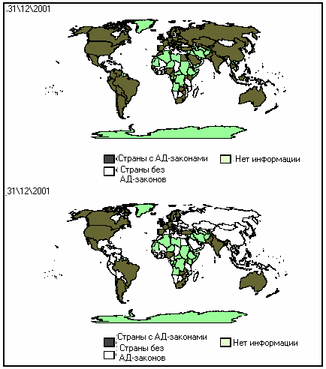

Антимонопольное законодательство и международная торговля
Антитрастовское законодательство проявляется в международных антидемпинговых мерах, невозможности для национальных компаний вырастать до уровня, когда они способны конкурировать на мировом рынке и приводит ко многим другим бедам в международной торговле.
1 Антимонопольное регулирование и свобода торговли: проблемы соотношения
Полезность свободной международной торговли для благосостояния граждан является одной из достаточно немногих "точек согласия" среди экономистов. Так, например, в 1990 г. снижение тарифов и квот безо всяких оговорок поддерживали 76% американских экономистов, а с определенными оговорками - 94%. (Alston et al, Is There a Consensus Among Economists in the 1990s, Am. Ec. Rev., Vol 82, Issue 2, May 1992).
Полезность же антимонопольного законодательства (АМЗ) вызывает гораздо большие сомнения (уровень безоговорочной поддержки, по тем же данным, составлял 35%). И эти сомнения будут усиливаться по мере осознания того, что выбор неизбежен: либо защита свободной торговли, либо поддержка антимонопольного законодательства.
Непреодолимое противоречие между свободой международной торговли и АМЗ достаточно легко увидеть, если обратить внимание на историю АМЗ. Большинство авторов сходится во мнении, что АМЗ в современном виде появилось в США в 1890 г, когда был принят Акт Шермана (Sherman Act), ставший моделью для антимонопольных законов во всем мире.
Сторонники АМЗ традиционно связывают принятие данного Акта с предполагаемыми монополистическими тенденциями в экономике США, которые наносили вред благосостоянию потребителей. Тем не менее, непредвзятый статический анализ показывает, что обвиняемые в монополизме отрасли росли быстрее, чем другие, а также более быстро снижали цены (см. Таблица 1).
Таблица 1. Показатели деятельности "монополизированных" и "немонополизированных" отраслей в 1880-1890 гг., в процентах
|
1880-1890 |
||||
|
Рост выпуска |
||||
|
номинальный ВВП |
16 |
реальный ВВП |
24 |
|
|
средний по "монополизированным" отраслям |
62 |
средний по "монополизированным" отраслям |
175 |
|
|
хлопковое масло |
151 |
сталь |
258 |
|
|
изделия из кожи |
133 |
Цинк |
156 |
|
|
такелаж и бечевка |
166 |
уголь |
153 |
|
|
Джут |
57 |
стальные рельсы |
142 |
|
|
нефть |
79 |
|||
|
сахар |
75 |
|||
|
Рост цен |
||||
|
Индекс потребительских цен |
-7 |
|||
|
Сталь |
-53 |
|||
|
очищенный сахар |
-22 |
|||
|
Свинец |
-12 |
|||
|
Цинк |
-20 |
|||
|
Источник: Thomas DiLorenzo "The Origins of Antitrust Rhetoric vs. Reality" Regulation, Volume 13, Number 3, Fall 1990 (http://www.cato.org/pubs/regulation/regv13n3/reg13n3-dilorenzo.html ) |
Основным "двигателем" столь динамичного развития стали крупные компании, обладавшие серьезным преимуществом в эффективности по сравнению со своими более мелкими конкурентами. Именно это и подтолкнуло последних к активной лоббистской работе с парламентариями, среди которых оказался сенатор Джон Шерман (http://www.gmu.edu/departments/economics/pboettke/rae/VOL.%2015%20(4)%202002/troesken.pdf). Предложения промышленников были относительно новыми, однако их новизна и новизна принятого в конечном итоге закона были скорее в избранных инструментах, чем в тех целях, ради которых от принимался.
Целью Акта Шермана, как и целью уже существовавших протекционистских законов, была защита одних конкурентов от других (а в конечном итоге, защита от свободного выбора потребителей продукции). Специфика же применявшихся средств отвечала изменившейся ситуации: наибольшую угрозу для фермеров (http://www.qjae.org/journals/rae/pdf/R62_3.pdf) и промышленников стали представлять не их коллеги из других стран, а более эффективные конкуренты внутри страны. В этом смысле, АМЗ стало аналогом протекционизма для "внутреннего использования", отличаясь, правда, от обычного протекционизма интенсивной "прорыночной" риторикой.
Косвенные доказательства того, что именно защита одних конкурентов от других была основной целью введения в США антимонопольного законодательства, предоставляет обзор переписки сенатора Шермана. Обзор показывает, что сенатор не получал просьб о введении антимонопольного законодательства от потребителей, пострадавших от предполагаемого монополизма на американском рынке. В то же время, такие просьбы поступали от представителей промышленности. При этом некоторые предложения промышленников непосредственно становились основой актов, продвигавшихся сенатором.
(http://www.gmu.edu/departments/economics/pboettke/rae/VOL.%2015%20(4)%202002/troesken.pdf )
В дальнейшем успешный опыт борьбы с конкуренцией внутри отдельных стран оказался полезным и в международной торговле, где различные меры антимонопольной политики стали применяться для устранения иностранных конкурентов. В результате, АМЗ стало одной из наиболее опасных и, при этом, респектабельных форм современного протекционизма.
Соотношения между АМЗ и "классическим" протекционизмом, несколько упрощая, можно выразить следующим образом. Протекционизм направлен на противодействие иностранным компаниям, а АМЗ - на противодействие крупным компаниям. Таким образом, существуют как "точки взаимодействия", так и "поводы для столкновения" (см. Таблица 2).
Таблица 2. Сравнение "мишеней" антимонопольного законодательства (АМЗ) и протекционизма (П)
Юрисдикция
|
Российские компании |
Иностранные компании |
||
|
|
Большие компании |
АМЗ |
АМЗ и П |
|
Малые компании |
- |
П |
АМЗ используется как оправдание протекционизма в борьбе против иностранных компаний. Наиболее характерным инструментом в этой борьбе является антидемпинговое законодательство, которое ставит своей целью защиту промышленности под предлогом противодействия "нечестной конкуренции".
Недавно американская алюминиевая компания Alcoa инициировала расследование предполагаемого случая демпинга со стороны Hulett Aluminium (ЮАР), компании, доля которой на мировом рынке (1,2%) намного меньше доли Alcoa (13,5% в 2002 году). При этом объем продаж, которые Alcoa рассматривает как демпинговые, также составляет менее 1% алюминиевого рынка США. (http://allafrica.com/stories/200310200670.html) Соотношение размеров компаний в описанном случае таково, что не может быть даже и тени подозрения, что Hulett Aluminium действительно пыталась при помощи демпинговых продаж выдавить конкурента с рынка. Зато есть все основания считать, что целью Alcoa является устранение конкуренции руками правительства и поддержание максимально возможных цен.
Противоречия между АМЗ и протекционизмом выражаются в том, что АМЗ препятствует развитию тех самых крупных национальных компаний, которые протекционистские меры призваны защищать.
Так, 9 сентября 2003 года австралийская Competition and Consumer Commission запретила создание альянса между австралийской авиакомпанией Qantas airline и новозеландской Air New Zealand. В рамках альянса предполагалась покупка австралийской компанией 22,5% акций Air New Zealand. Причиной намечавшейся сделки была угроза разорения Air New Zealand, о которой компания заявила в августе, объяснив это конкуренцией с намного более крупной Qantas. Подобная угроза не выглядела нереалистичной в свете нескольких лет убытков и банкротства австралийского филиала Air New Zealand, после которого правительство Новой Зеландии было вынуждено потратить на спасение компании 531 млн долларов.
В конце октября от одобрения сделки отказалась и новозеландская Commerce Commission, заявившая, что предлагаемый план "повредит конкуренции и потребителям и, следовательно, не в интересах новозеландцев.
Таким образом, в результате слаженных действий регуляторов, австралийскому антимонопольному ведомству удалось предотвратить расширение бизнеса национальной компании, а новозеландскому - "стимулировать конкуренцию", поставив под угрозу существование фирмы, которая могла бы стать прибыльной. (http://newsobserver.com/24hour/business/story/1034580p-7264228c.html).
С другой стороны, протекционистские меры препятствуют иностранным компаниям конкурировать с национальными компаниями, что должно бы было приветствоваться "по теории" АМЗ.
Эти проблемы уже содержит упомянутая переписка сенатора Шермана. Так, в августе 1888 года руководитель John Deere Company в Иллинойсе просил Шермана и республиканцев принять антимонопольное регулирование, основываясь на следующей проблеме: "Мы наблюдаем значительное недовольство со стороны промышленников по поводу трестов и объединений, которые существуют в большинстве сырьевых отраслей... Несмотря на то, что эти объединения {combinations} могут и не являться прямым порождением протекционистских тарифов, в ряде случаев такие объединения была бы невозможны, а в других затруднительны, если бы не было тарифов... Мы верим в протекционистский тариф на том основании, что он повышает общее благосостояние, но {наша} лояльность подвергается жестоким испытаниям, когда мы вынуждены покупать сырье у объединений и сталкиваться с контролируемыми ими ценами, которые намного выше, чем в другом случае были бы на свободном рынке". (http://www.gmu.edu/departments/economics/pboettke/rae/VOL.%2015%20(4)%202002/troesken.pdf)
Этот случай позволяет также продемонстрировать проблему "порочного круга" регулирования - вмешательство государства в свободный рынок приводит к непредвиденным до этого проблемам, для решения которых уже приходится идти на новое вмешательство.
Так или иначе, АМЗ мешает свободной торговле - то ли препятствуя входу на рынок иностранных компаний, то ли нанося ущерб развитию компаний собственной страны.
Достаточно условно можно выделить три уровня, на которых сторонники АМЗ противодействуют развитию свободной торговли ("торговля" в данном обзоре трактуется в широком смысле, включающем любые операции, предполагающие пересечение границ или сделки между гражданами различных государств).
Во-первых, национальный уровень. Большинство стран мира (список редких "неприсоединившихся" можно найти в Таблица 3) имеет антимонопольное законодательство, и такое специфическое именно для международной торговли его проявление, как антидемпинговое законодательство. Для развитых стран основной тенденцией последних десятилетий является некоторое смягчение этих норм в рамках широких пакетов реформ. В посткоммунистических странах наблюдается противоположная тенденция - принятие АМЗ там, где его до этого не было.
Например, в Канаде в 1984 году был отменен Акт "Об антидемпинге". Хотя это и не означает полного отказа от антидмемпинговых мер, но приближает их применение к другим мерам антимонопольного регулирования, что является шагом к отказу от дискриминации иностранных компаний.
Другие нормы антимонопольного регулирования также претерпевают изменения. В США и даже в России все большее количество деловых практик ограничивается по принципу здравомыслия (rule of reason), что означает отказ от полных запретов в пользу предоставления возможности компаниям обосновать наличие позитивных социальных последствий от прежде незаконных сделок.
Во-вторых, уровень двусторонних отношений "страна-страна". Отношения этого типа строятся преимущественно по принципу эксклюзивности, т.е. государства договариваются об "уступках" в смягчении законодательного режима именно друг для друга. Важной тенденцией в этой области становится создание зон взаимного отказа от антидемпингового законодательства.
Так, в 1996 году между Канадой и Чили было заключено двухстороннее Соглашение о Свободной Торговле (Free Trade Agreement), отдельная часть которого была посвящена отмене использования антидемпинговых мер в отношении компаний друг друга. С момента вступления в силу Соглашения каждая из сторон соглашается не применять свое антидемпинговое законодательство к товарам другой стороны, а именно:
· Ни одна из сторон соглашения не будет начинать антидемпинговые расследования относительно товаров другой стороны
· Каждая сторона соглашения должна отменить любое проводящееся антидемпинговое расследование относительно товаров другой стороны
· Ни одна из сторон не будет вводить новые антидемпинговые пошлины или другие меры относительно товаров другой стороны
· Каждая сторона должна отозвать все существующие предписания, вводящие антидемпинговые пошлины относительно товаров другой стороны.
Применение антидемпинговых мер возможно только в таких исключительных обстоятельствах, как значительные изменения в существующих условиях торговли, и с обоюдного согласия обеих сторон.
( http://www.dfait-maeci.gc.ca/tna-nac/cda-chile/chap-m26-en.asp)
В-третьих, уровень многосторонних отношений ("страна-организация"). На этом уровне наиболее характерна деятельность по унификации правил антимонопольной политики и антидемпингового законодательства. Тем не менее, к этому типу отношений можно отнести и формирующиеся многосторонние зоны взаимного отказа от антидемпингового законодательства.
Начало антидемпинговой политики было положено отдельными странами, принявшими соответствующие законы: Канадой (1904 г), Новой Зеландией (1905 г), Австралией (1906), Южно-Африканским Союзом. Однако массовым распространение антидемпинговых норм стало после подписания ГАТТ (Генерального соглашения о тарифах и торговле) в 1947 г, статья VI которого осуждала демпинг. Будучи сформулированными в достаточно общем виде, нормы ГАТТ не допускали однозначной интерпретации. В итоге 13 июля 1967 года, в ходе так называемого "раунда Кеннеди" переговоров по ГАТТ (Женева) несколькими участниками было подписано первое Соглашение об интерпретации данной статьи. С тех пор Соглашение претерпело значительные изменения, а список его участников неуклонно расширялся. Участниками последнего, третьего Соглашения, являются все страны-члены ВТО.
Обозначенным уровням столкновений сторонников и противников АМЗ приблизительно соответствуют четыре основные проблемы в отношениях между АМЗ и международной активностью любой страны.
Во-первых, АМЗ препятствует развитию бизнеса страны, которые интенсивно вовлекается в международную торговлю и благодаря этому становится все более крупным.
Во-вторых, АМЗ препятствует международной торговле тем, что активно вмешивается в деятельность международной инфраструктуры торговли (транспорт, информатика).
В-третьих, АМЗ препятствует входу на национальный рынок иностранных компаний и является специфическим дополнением протекционизма.
В-четвертых, в международной деятельности государств широко распространена практика навязывания норм АМЗ. Многие государства поддаются на соблазн (или давление) "импорта" этого вида законодательства.
Далее обзор затронет состояние каждой из приведенных проблем.
2 АМЗ как фактор уменьшения конкурентоспособности страны
2.1 АМЗ и "группы особых интересов"
С момента принятия Акта Шермана АМЗ в различных его проявлениях было принято в большинстве стран мира, хотя и не во всех (см. Таблица 3).
Таблица 3. Страны, где отсутствует антимонопольное законодательство
|
Азия |
Африка |
Европа |
Океания |
Северная Америка |
Южная Америка |
|
Афганистан |
Ангола |
Андорра |
Папуа-Новая Гвинея |
Антигуа и Барбуда |
Гайана |
|
Бангладеш |
Ботсвана |
Фарерские острова |
Багамские острова |
Курасао |
|
|
Бруней |
Габон |
Белиз |
Парагвай |
||
|
Гонконг |
Гвинея |
Бермудские острова |
Суринам |
||
|
Иран |
Камерун |
Гондурас |
|||
|
Катар |
Конго |
Гренландия |
|
||
|
Непал |
Лесото |
Доминика |
|
||
|
Саудовская Аравия |
Либерия |
Каймановы острова |
|
||
|
|
Ливия |
Куба |
|
||
|
|
Мавритания |
Никарагуа* |
|
||
|
|
Мадагаскар |
|
|||
|
|
Намибия |
|
|||
|
|
Нигерия* |
|
|||
|
|
Свазиленд |
|
|||
|
|
Центрально-Африканская Республика |
|
|||
|
|
Эритрея |
|
|||
|
|
Эфиопия |
|
|
|
|
(По данным Международной ассоциации юристов, http://www.globalcompetitionforum.org/)
Разумеется, невозможно не обратить внимание на то, что антимонопольное законодательство отсутствует, прежде всего, в небольших экономиках. Приведенные данные сторонники АМЗ могли бы интерпретировать как доказательство того, что АМЗ характерно для всех развитых стран. Однако, кроме фактов, имеют значение и объяснения. Вполне вероятно, что в данном случае объяснением является то, что маленькие экономики, в отличие от больших, не могут позволить себе противодействовать появлению крупного по местным масштабам бизнеса, одновременно не делая национальные компании абсолютно неконкурентоспособными.
Связывать распространение АМЗ только с Актом Шермана было бы ошибкой - для подавляющего большинства стран АМЗ, как и протекционизм, стали вполне органичными наследниками цеховых и аналогичных им ограничений в торговле. Однако, если протекционизм в наибольшей степени унаследовал акцент на то, кому дозволено всегда, кому дозволено при определенных обстоятельствах, а кому и вовсе не дозволено, заниматься каким-либо промыслом, то для АМЗ (особенно на первом этапе его развития) характерно определение того, какие деловые практики являются честными (конкурентными), а какие нечестными. Общей целью всех названных видов законодательства является ограничение свободной конкуренции некоторыми рамками. В этом качестве все они являются орудиями "групп особых интересов".
Описание Максом Вебером цеховых правил позволяет легко узнать принципы, впоследствии использованные и в антимонопольном, и в протекционистском законодательствах.
Для АМЗ: "Внутренняя цеховая политика стремилась всеми мыслимыми средствами установить равные шансы для всех членов цеха, подобно тому, как стремились этого достичь крестьяне путем раздела полей. Чтобы осуществить это равенство, следовало воспрепятствовать развитию мощи капитализма, особенно не допускать неравномерного роста капитала у отдельных мастеров и вытекающего отсюда неравенства; один мастер не должен возвышаться над другим... Нередко существовало право выкупа: всякий член цеха в случае недостатка материала имел право требовать от товарища, чтобы тот ему уступил свой материал по себестоимости ".
Для протекционизма: "Цех прилагал усилия к тому, чтобы сырой продукт проделывал как можно более длинный путь внутри отдельного хозяйства, чтобы отдельный рабочий удерживал в своих руках изготовляемый предмет как можно дольше. Работа распределялась, поэтому, на основе расчленения отраслей, а не технической специализации... В случае перехода продукта из одного цеха в другой, цехи устанавливали таксу; внутри цехов цена была минимальной, вне цехов устанавливалась на началах монополии".
(История Хозяйства. Город., Макс Вебер)
Отличительной чертой любого вида законодательства, направленного на защиту особых интересов, является то, что оно не может последовательно применяться без существенного ущерба для страны. Это легко объясняется тем, что привилегия избранным не может приносить блага всем.
В АМЗ теоретических и практических противоречий не меньше, чем в протекционизме.
Например, АМЗ во многих странах запрещает "связывание", т.е. практику, при которой некоторые товары продаются "в пакете" с другими товарами, которые в принципе могут продаваться по-отдельности. Последовательное проведение этого запрета в жизнь помешает не только продавать Windows с Internet Explorer, но и продавать дешевые авиабилеты в пакете с путевкой, а также пиджаки Ermenegildo Zegna вместе с пуговицами, которые покупатели, в принципе, могли бы предпочесть приобрести сами.
Другой пример состоит в том, что, независимо от избранной тактики ценообразования крупная фирма всегда может быть обвинена в выборе одной из "запрещенных" практик.
Если цена выше, чем у конкурентов, то, возможно, она "монопольная". Если ниже, то - "хищническая". Если же она равна цене конкурентов, то можно заподозрить "сговор".
Однако противоречивость доктрины АМЗ является одновременно и секретом ее успеха. Ведь чем более расплывчата идея, тем больше возможностей манипулировать ею в любых целях. Причем, в отличие от протекционистского законодательства, с использованием "либеральной" риторики про конкуренцию.
Хороший пример "направляемой противоречивости" дает авиаиндустрия США. В июне 2001 года было начато антимонопольное расследования против компании Orbitz, занимающейся продажей авиабилетов через Интернет. Важной частью обвинений против компании стал "антиконкурентный" характер ее деятельности, состоящий в том, что Orbitz учреждена как совместное предприятие ряда крупнейших авиакомпаний. Данное расследование стало результатом обвинений конкурентов Orbitz - компьютерных систем резервирования, высокие цены на услуги которых и заставили авиакомпании развивать собственную систему дистрибуции билетов. Длившееся более двух лет расследование не выявило признаком нарушения антимонопольного законодательства.
Стоит заметить, что за тридцать лет до этого, когда отдельные авиакомпании попытались создавать собственные системы резервирования, государство вмешалось в этот процесс, чтобы предотвратить односторонние преимущества, которые дает обладание собственной системой.
Таким образом, обвинения в антиконкурентном характере могут получить как сепаратные ("получение эксклюзивных преимуществ"), так и совместные ("сговор") действия компаний. (http://www.cato.org/pubs/pas/pa441.pdf )
Характерной особенностью АМЗ является то, что оно направлено, прежде всего, против крупного бизнеса и, как обратная сторона этого, должно поддерживать малый бизнес.
В этом свете совершенно не случайно, что Положение о Министерстве Российской Федерации по антимонопольной политике и поддержке предпринимательства предусматривает, среди прочего, и подготовку министерством "в пределах своей компетенции предложения по усилению государственной поддержки и развитию предпринимательства, особенно малого и среднего".
В канадском законе о конкуренции, среди прочих целей его введения, указывается, что он направлен на то, чтобы малые и средние предприятия обладали равными (equitable) возможностями действовать в канадской экономике". (http://www.globalcompetitionforum.org/regions/n_america/canada/cana_l.pd)
Немецкий антимонопольный закон также предоставляет некоторые льготы малому и среднему бизнесу, разрешая ассоциациям таких бизнесменов вводить рекомендации по согласованному поведению, которые позволяли бы лучше конкурировать с крупным бизнесом. При этом, крупному бизнесу запрещено распространять подобные рекомендации. (http://www.globalcompetitionforum.org/regions/europe/Germany/Act%20Against%20Restrainst%20of%20Competition.pdf)
Другой пример того, как АМЗ связано с интересами малого и среднего бизнеса, дает принятие в США еще одного знаменитого закона - поправок к Акту Клейтона (Clayton Act) в рамках Акта Робинсона-Пэтмена (Robinson-Patman Act). Одним из основных акцентов закона был запрет ценовой дискриминации (назначения разных цен разным покупателям), за исключение тех случаев, когда она объясняется разницей в издержках. Проект этого закона был разработан Ассоциацией американских торговцев бакалеей (U.S. Wholesale Grocers' Association) и отражал озабоченность владельцев отдельных магазинов растущей конкуренцией магазинных сетей, которые получали более значительные скидки благодаря большему объему закупок. (Richard Caves, American Industry: Structure, Conduct, Performance, NJ: Prentice-Hall, 1967).
2.2 АМЗ в условиях роста международной торговли
Благодаря направленности АМЗ против крупного бизнеса, рост международной торговли является одним из "встроенных" механизмов, сталкивающих компании и антимонопольные органы. Ведь открытие границ и расширение рынков предоставляет национальному бизнесу дополнительные возможности роста. А выросшая фирма становится предметом различных антимонопольных ограничений.
В России попадание предприятия в созданный в соответствии с ФЗ "О конкуренции и ограничении монополистической деятельности на товарных рынках" реестр хозяйствующих субъектов, имеющих на рынке определенного товара долю более 35 процентов, оказывает влияние на важнейшие стороны деятельности: увеличение капитала, реорганизацию, структуру производства и продаж. Все это предполагает возникновение серьезных дополнительных издержек. Ущерб от нахождения в Реестре подтверждается письмом Высшего Арбитражного Суда Российской Федерации от 22 марта 1994 "О практике рассмотрения споров, связанных с применением антимонопольного законодательства", где говорится, что "включение в упомянутый реестр влечет ... последствия, ущемляющие права хозяйствующих субъектов".
На применение АМЗ не влияет даже характерная для современной индустрии децентрализация фирм - антимонопольные органы стали действовать не только в отношении отдельных крупных компаний, но и против возможно небольших по отдельности, но крупных в совокупности, групп аффилированных компаний.
Рост размеров фирмы открывает возможность для ее преследования антимонопольными органами по многим поводам, среди которых наиболее значительны:
- Установление монопольных цен;
- Установление "хищнических" цен;
- "Связывание";
- Ценовая дискриминация и иные виды дискриминации;
- Вертикальная и горизонтальная интеграция;
- Создание барьеров для входа.
Ниже мы рассмотрим те возникающие в связи с перечисленными видами регулирования проблемы, которые представляют наибольший интерес в контексте международных экономических отношений.
2.3 Ограничения на расширение фирм
Расширение компании может происходить как при слиянии с другими фирмами, так и путем роста операций компании и создания новых производственных мощностей. В любом из этих случаев компания может оказаться объектом внимания антимонопольных органов.
2.3.1 Ограничения на слияния
АМЗ, как правило, проводит различие между горизонтальными и вертикальными слияниями. Горизонтальное слияние означает объединение нескольких до того независимых фирм, принадлежащих к одной отрасли. Подобные слияния регулируются наиболее жестко, так как предполагают уменьшение числа конкурентов в отрасли, что отождествляется с уменьшением конкуренции.
В отличие от теоретиков, бизнесмены не столь однозначно отождествляют количество конкурентов с возможностью конкуренции на рынке: "Честно говоря, если Oracle приобретает Peoplesoft, уже поглотившую J.D. Edwards, это означает, что в результате с рынка исчезают два наших конкурента. SAP сможет сконцентрироваться на конкуренции с одним игроком вместо трех". (Из интервью главы SAP Леса Хэймана "Ведомостям", 27.10.03)
Вертикальное слияние является объединением фирм, осуществляющих последовательные стадии производства и связанных поэтому отношением "поставщик-покупатель". В данном случае непосредственного уменьшения числа конкурентов ни на одном из рынков не происходит, однако подобные слияния также, как правило, ограничиваются. Предполагается, что подобные формы объединения помогают "поставщику" исключить конкуренцию за "покупателя". Благодаря указанным различиям между вертикальными и горизонтальными слияниями, отношение регулирующих органов к вертикальным слияниям несколько более мягкое. Тем не менее, для наших целей различие между двумя видами слияний не представляет особого интереса: оно имеет последствия для государственного регулирования только в рамках сохранившегося "цехового" подхода к конкуренции, когда "честная" конкуренция предполагает относительное равенство участников, как в смысле размера, так и в смысле доступа к рынкам сбыта.
Наиболее характерной чертой этого подхода является то, что объявляемая "совершенной" конкуренция в реальности вообще не предполагает того, что люди конкурируют друг с другом: "конкуренты" продают один и тот же товар по одним и тем же ценам.
Родоначальником современной теории совершенной конкуренции стал А. Курно, опубликовавший в 1838 году "Исследование математических принципов теории богатства". Однако развитие данной теории стало результатом не только "Исследования..." А. Курно, но и искаженной его интерпретации.
А. Курно писал "Влияние конкуренции достигает своего предела, когда каждое из частичных производств Dk [объем производства производителя k] становится неощутимым не только относительно общего производства D=F(p), но также и по отношению к производной F'(p), так что частичное производство Dk может быть вычтено из D и это не приведет к сколь-либо заметному изменению цены на товар". Фактически, это описание ситуации "совершенной конкуренции", но легко заметить, что А. Курно писал о результатах конкуренции, моменте, когда ее "влияние достигает своего предела", а не о собственно конкуренции. Грубейшая ошибка - отождествление конкуренции с ее результатом и концом - была сделана уже последующими авторами.
Неявно теория совершенной конкуренции подразумевает, что чем больше независимых друг от друга участников будет в экономике, тем лучше. Однако эта точка зрения едва ли может выдержать тест на последовательность: маловероятно, что ее сторонник согласится с тем, что 1000 мелких операторов мобильной связи непременно лучше, чем 3-4 крупных. А если выводы нельзя сделать исключительно основываясь на принципе "чем больше, тем лучше", то это означает, что должен существовать некоторый принцип нахождения оптимума, который учитывал бы и технологию производства, и другие факторы. Для горизонтальных слияний этот принцип должен определять "наилучшее для общества" количество фирм в отрасли. Для вертикальных слияний - количество последовательных стадий производства, которые можно осуществлять в рамках одной компании.
Более адекватным отношением, чем "теория совершенной конкуренции", является взгляд на конкуренцию как на процесс, в ходе которого конкуренты стараются сделать что-то отличное и лучшее, чем у других, что может включать и объединение фирм. Противодействие государства этому процессу является непосредственным ограничением конкуренции на рынке и конкурентоспособности отдельных фирм.
Компании "Тольяттиазот" антимонопольные органы России запретили покупать аммиакопровод на Украину. По словам антимонопольного министра РФ И. Южанова, "иначе это привело бы к ситуации, когда производитель аммиака владел бы естественно-монопольной структурой и мог диктовать условия другим участникам рынка".(http://www.maprf.ru/img/uploaded/Obzor_pressy_05.12.2002-0.doc ) Фактически МАП предпочел "равный доступ" к трубопроводу возможности оптимизировать бизнес-операции "Тольяттиазота" и улучшить его положение на украинском рынке.
Причем в случае с относительно небольшими (по размерам ВВП) странами контроль за слияниями приводит к особенно негативным результатам, так как препятствует росту небольших по мировым меркам компаний, которые считаются крупными только благодаря большой доле на относительно маленьком национальном рынке. В такой ситуации фирма лишается возможности получить экономию на масштабе деятельности, которая существует у ее иностранных конкурентов и фактически исключается из числа игроков на мировом рынке. Однако, хотя возможность повредить развитию своих компаний наиболее высока именно в странах с маленьким внутренним рынком, иногда она всерьез принимается во внимание и в достаточно крупных и богатых странах.
Так, в 1987 году британская Комиссия по монополиям и слияниям (Monopolies and Mergers Commission, MMC) одобрила слияние между авикомпаниями British Airways и British Caledonian. Несмотря на то, что комиссия выявила некоторое негативное влияние такого слияния на мелкие авиакомпании, она приняла во внимание то, что слияние помогает создать национального лидера, которые сможет лучше конкурировать на международном рынке. (http://www.iie.com/publications/chapters_preview/56/6iie1664.pdf )
Французский Совет по конкуренции (Conceil de la Concurrence) в 1994 году разрешил создание совместного предприятия между Metaleurop и Heubach & Lindgens, которые производят оксид свинца, используемый при изготовлении аккумуляторных батарей, стекла и красок. При этом, совместная доля участников сделки во Франции составляла около 90%. При принятии решения Совет принял во внимание как то, что отдельные пользователи оксида свинца могут производить его сами, так и концентрацию продавцов и покупателей не только на французском, но и на европейском рынке. (http://www.iie.com/publications/chapters_preview/56/3iie1664.pdf )
Стоит заметить, что в обоих случаях речь шла о горизонтальных слияниях, отношение к которым традиционно более жесткое, чем к вертикальным.
2.3.2 Ограничения на расширение мощностей
Не менее вредным для развития бизнеса, чем контроль за слияниями, является контроль за развитием производственных мощностей. Фактически в этом случае, под видом борьбы с монополиями, которые якобы завышают цены и занижают объемы продаж, борьба идет с компаниями которые увеличивают выпуск быстрее, чем их конкуренты, благодаря чему и растет их доля рынка.
Подобная возможность не только предусмотрена российским законодательствам, но и упоминалась в интервью с министром по антимонопольной политике И. Южановым:
- Может ли создаться ситуация, когда МАП потребует от компании, которая построила новые заводы, избавиться от некоторых из них?
- Может. Это нормальная практика.
- Что для этого должно случиться?
- Анализ внутрироссийского рынка должен показать, что положение компании на нем стало доминирующим. Объем производства как таковой для нас не главное. Потому что значительная часть продукции может отправляться на экспорт, как мы видим в случае с "Русалом" или "Норильским никелем". (http://www.maprf.ru/img/uploaded/Obzor_pressy_05.12.2002-0.doc )
2.3.3 Процедуры слияния и мировой опыт
Отдельным, хотя и не столь принципиальным, вопросом в проблеме слияний является процедура уведомления антимонопольных органов. В России эта проблема стала обсуждаться в связи с поддержанным Министерством по экономическому развитию и торговле предложением главы "Базового элемента" О. Дерипаски заменить разрешительный порядок слияния на уведомительный с возможностью последующего расторжения сделки по слиянию через суд. Мировой опыт показывает, что подобный подход не является чем-то исключительным и существует в целом ряде стран.
Из обследованных Министерством юстиции США 80 стран, имеющих антимонопольное законодательство, около 60 осуществляют контроль за слияниями (http://www.usdoj.gov/atr/icpac/chapter2.htm). При этом детали режима контроля могут отличаться в зависимости от страны и типа сделок. С одной стороны, страна может использовать процедуры обязательного предварительного уведомления. С другой стороны, антимонопольные органы могут получить уведомление уже после завершения сделки с возможностью оспорить сделку в суде (см. Таблица 4). При выборе такого варианта, тем не менее, обычно возникают процедуры добровольного предварительного согласования слияний, которые позволяют уменьшить правовую неопределенность. Так, в Австралии, в которой не существует процедуры обязательного уведомления, компания, тем не менее, может предпочесть получить иммунитет от возможного судебного преследования и предварительно подать заявку для формального утверждения (http://www.accc.gov.au/pubs/publications/business_general/mergers_and_acquisitions/mergerguide.pdf).
Таблица 4. Мировая практика уведомления перед слиянием
|
Обязательное предварительное уведомление |
Обязательное последуюшее уведомление |
Добровольное уведомление |
|
|
Австрия |
Нидерланды |
Аргентина |
Австралия |
|
Азербайджан |
Польша |
Греция |
Берег Слоновой Кости |
|
Албания |
Португалия |
Дания |
Великобритания |
|
Аргентина |
Россия |
Индонезия |
Венесуэла |
|
Белоруссия |
Румыния |
Испания |
Новая Зеландия |
|
Бельгия |
Словакия |
Македония |
Норвегия |
|
Болгария |
Словения |
Россия |
Панама |
|
Бразилия |
США |
Тунис |
Франция |
|
Венгрия |
Таиланд |
ЮАР |
Чили |
|
Германия |
Тайвань |
Южная Корея |
|
|
Греция |
Тунис |
Япония |
|
|
ЕС |
Турция |
|
|
|
Израиль |
Узбекистан |
|
|
|
Ирландия |
Украина |
|
|
|
Италия |
Финляндия |
|
|
|
Казахстан |
Хорватия |
|
|
|
Канада |
Чехия |
|
|
|
Кения |
Швейцария |
|
|
|
Кипр |
Швеция |
|
|
|
Колумбия |
Эстония |
|
|
|
Латвия |
ЮАР |
|
|
|
Литва |
Югославия |
|
|
|
Македония |
Южная Корея |
|
|
|
Мексика |
Япония |
|
|
|
Молдавия |
|
|
|
(Из доклада Министерства Юстиции США: http://www.usdoj.gov/atr/icpac/2c.htm)
2.3.4 Ограничения на расширение фирм: итоги
Итак, успешное участие компаний в международном разделении труда предполагает и возможность беспрепятственного роста фирм до того уровня, который позволит им успешно конкурировать на мировом рынке. Антимонопольные органы все чаще вынуждены учитывать этот факт.
Кроме того, в ряде случаев антимонопольные органы предпочитают отказаться от разрешительных процедур при проведении слияний и борются не собственно с размером компаний и их долей на рынке, а с конкретными формами поведения.
2.4 Хищническое ценообразование
Хищническое ценообразование является еще одним мифом, который имеет серьезное значение для международной торговли. Основная схема, заложенная в теорию хищнического ценообразования, проста: доминирующая фирма устанавливает цену на свою продукцию ниже издержек, что приводит к разорению конкурентов, после чего у нее появляется возможность воспользоваться преимуществами монопольного положения и установить монопольные цены на свою продукцию. Эта теория имеет два основных приложения к проблематике международной деятельности фирм.
Во-первых, эта теория входит в АМЗ, где, как правило, содержатся нормы, запрещающие "хищническое ценообразование". В России такая практика называется установлением монопольно низких цен.
Во-вторых, эта теория является (наряду с теорией ценовой дискриминации) основой антидемпингового законодательства, особенности которого будут проанализированы в четвертой части обзора.
Как и в случае противодействия вертикальным и горизонтальным слияниям, нормы по борьбе с "хищническим ценообразованием" имеют шаткое теоретическое обоснование и так же вредны для развития национальной экономики. Чтобы убедиться в справедливости этого тезиса, мы обратимся к основным заинтересованным сторонам в предполагаемой ситуации "хищнического ценообразования": потребителям, конкурентам, поставщикам "хищника" и самому "хищнику".
2.4.1 Потребители и конкуренты
С точки зрения потребителей, важным для оценки ситуации фактором является их осведомленность о "хищническом" характере продажи товара. Если потребители не осведомлены о возможности монополизации товара, в их действиях не будет содержаться долгосрочного расчета. Однако даже в этой ситуации едва ли вероятны серьезные проблемы. Во-первых, если страна не проводит протекционистскую политику, количество потенциальных и реальных конкурентов достаточно велико и одновременное разорение всех из них маловероятно.
Во-вторых, если товар не быстропортящийся, то даже один человек, догадавшийся о будущих последствиях сможет серьезно изменить ситуацию, начав скупку товара и повышая цены задолго до того, как конкуренты хищника начнут нести ощутимые потери.
В-третьих, другие заинтересованные стороны вполне эффективно могут предовратить монополизацию, о чем будет подробно рассказано ниже.
Если же потребители осведомлены о возможных опасностях, согласие покупать товары данной фирмы будет выражать их вкусы: на взгляд покупателей выигрыш от дешевой покупки сейчас перевешивает убытки от более дорогих покупок потом. Таким образом, осведомленность потребителей либо лишает фирму возможности устанавливать монопольно низкую цену, либо позволяет продолжать подобную политику, повышая благосостояние покупателей.
Теперь можно обратимся к анализу положения конкурентов. Если конкуренты не осведомлены о стратегии "хищника", то могут покинуть рынок, считая, что не в состоянии эффективно действовать на данном рынке. Разумеется, это будет их ошибкой, однако едва ли можно считать, что мнение регулирующих органов, либо судов будет точным в большем количестве случаев, чем у практикующих бизнесменов.
Если же фирма-конкурент осведомлена о стратегии хищника, но вынуждена нести убытки, то вполне естественным является обращение к рынку капитала. Успех здесь почти целиком зависит от убедительности аргументов фирмы, доказывающих существование "хищнического ценообразования". Если фирма, несмотря ни на что, останется существовать и после установления монопольно высоких цен, то она тоже поучаствует в получении монопольной прибыли, которая позволит покрыть затраты на привлечённое финансирование. Однако вполне вероятно, что сама возможность получения кредитов предотвратит "ценовую войну" или приведет к к объединению конкурирующих фирм.
Возможные возражения, касающиеся несовершенства рынка капитала, едва ли стоит считать убедительными, особенно если речь идет о странах, не препятствующих деятельности своих граждан на международных рынках капитала. С одной стороны, денежный капитал является наиболее легко делимым и мобильным из производственных ресурсов. С другой стороны, капитал формируется большим числом сберегателей. Поэтому маловероятно, чтобы хотя бы один из них владел даже 1% совокупных сбережений. Это делает маловероятными и серьезные системные ошибки.
Прочность положения мелких конкурентов во время ценовой войны станет более очевидной, если обратиться к рассмотрению положения самого хищника.
Прежде всего, обратим внимание на то, что средние издержки производства у данной фирмы не ниже, чем у конкурентов. В противном случае можно прогнозировать ее победу и без применения "хищнического ценообразования". Или, по-другому, хищник и есть та фирма, которая должна была бы победить и в результате "честной" конкуренции. Если же ее средние издержки равны издержкам конкурентов, ее убытки во время "ценовой войны" существенно больше, чем у последних. Уже обладая значительной долей рынка, фирма вынуждена расширять выпуск. Причем в этой ситуации конкуренты могут себе позволить сократить производство (и, соответственно, убытки) и ждать окончания "войны". Отсюда видно, что "ценовая война" может не иметь никакого определенного временного предела и привести к разорению доминирующей фирмы.
Упомянутые выше факторы показывают, что едва ли "хищническое ценообразование" может быть выигрышной стратегией. Аналогичные соображения позволили известному американскому экономисту Р. Борку заключить, что "... лучший способ хищничества - это убедить конкурента в том, что ты подходящая жертва и вовлечь его в безжалостную ценовую атаку".
Также важно иметь в виду, что "хищническое ценообразование" внешне неотличимо от некоторых других практик, не имеющих основной целью установление в перспективе монопольной цены. Наиболее важным видом такой практики для международной торговли является стратегия продаж в убыток до того момента, когда объемы продаж не смогут существенно уменьшить издержки и позволить фирме быть прибыльной даже при низких ценах.
Характерным примером такой ситуации можно считать продвижение Г. Фордом "Модели T", во время которого автомобиль достаточно долго продавался по цене, не достигающей средних издержек. Это привело к значительному росту доли продаж компании "Форд" и к значительному снижению издержек и росту прибыли. Таким образом, попытки уменьшить или устранить "хищническое ценообразование" также, вероятно, уменьшают или устраняют конкурентное ценообразование, выгодное для потребителей. (http://www.cato.org/pubs/pas/pa-169.html). В результате на протяжении более 20 лет продажи "Модели Т" составляли более половины мировых продаж автомобилей. (http://www.bkpm.go.id/bkpm/success.php?mode=baca&info_id=97)
Другой вполне вероятной ситуацией является случай, когда обвинения в "хищничестве" прикрывают неспособность конкурентов ответить на вызовы конкуренции. В этом случае жертвой антимонопольных разбирательств может стать наиболее эффективная компания отрасли.
Так, летом 2003 года Нью-Йоркской Ассоциация Станций обслуживания и ремонта, в состав которой входят только маленькие независимые заправочные станции, обвинила своих конкурентов - крупные, в том числе международные, компании, владеющие значительными сетями бензоколонок и также занимающиеся непосредственной переработкой нефти в топливо - в хищническом ценообразовании. Крупные компании продавали бензин по цене, которая была ниже цены членов Ассоциации, что и послужило поводом для заявления о том, что бензин продается ниже себестоимости для того, чтобы вынудить независимые бензоколонки уйти с рынка.
Очевидно, что продажа крупными компаниями топлива по более низкой цене была возможна не вследствие того, что они хотели избавиться от конкурентов, а потому, что они отличаются от независимых бензоколонок, во-первых, значительной экономией от масштаба, которая возникает благодаря развитой торговой сети, и, во-вторых, объединением в единое целое всех уровней: от начальной переработки нефти до продажи полученного топлива конечному потребителю, что также приводит к снижению и исчезновению множества издержек, характерных для независимых бензоколонок.
Тем не менее, под давлением Ассоциации, 24 октября вступил в действие Акт о маркетинговых практиках на рынке моторного топлива (Motor Fuel Marketing Practices Act), в соответствии с которым компании, продающие топливо, не могут назначать цену на него ниже уровня 98 % средних издержек. Заявляемой целью данного акта является защита интересов потребителей путем ограничения возможностей для применения крупными компаниями "хищнического" и других видов "нечестного" ценообразования.
Таким образом, наиболее эффективная часть компании нью-йорского рынка топлива была наказана своими менее эффективными конкурентами. Стоит заметить, что принятие данного Акта вызвало возражения со стороны Федеральной Комиссии по торговле США, которая заявила, что Акт не только наносит урон интересам потребителям, но и противоречит федеральному АМЗ.
(http://albany.bizjournals.com/albany/stories/2003/10/20/daily64.html)
2.4.2 Поставщики
Мы уже видели, что "хищническая" стратегия компании вызывает выработку ответных стратегий потребителей и конкурентов. Теперь анализ можно расширить путем учета интересов новых действующих лиц: поставщиков "хищника".(Подробнее см. http://www.cei.org/pdf/1470.pdf).
Поведение этой группы существенно отличается от поведения конкурентов предполагаемого "хищника". Если конкуренты не заинтересованы в снижении цены предполагаемым "хищником" в любом случае, даже если она останется выше предельных издержек, то поставщики находятся в более сложном положении.
Прежде всего, в отличие от конкурентов "хищника", они всегда заинтересованы в снижении цены, если оно носит "конкурентный" характер. Если же это "хищническое" снижение цен, то они могут как поддерживать будущую монополизацию, так и стараться ее не допустить.
Поддержка монополизации будет свидетельствовать о наличии у поставщиков высоких межвременных предпочтений, т.е. лучше потерять завтра, но больше приобрести сегодня. Однако поставщики фирмы могут быть и не заинтересованы в монополизации рынка, в уменьшении предложения монополизированного товара и, соответственно, в сокращении объема закупаемых у них товаров. Стратегии защиты могут принимать разные формы. Для удобства при перечислении стратегий защиты мы сопроводим их вероятной трактовкой в рамках российского законодательства. Стоит заметить, что законодательства других стран, как правило, содержат нормы, аналогичные приводящимся нормам российского ФЗ "О конкуренции и ограничении монополистической деятельности на товарных рынках".
Во-первых, фирмы-поставщики могут приобрести, либо создать, новую фирму, которая бы конкурировала с "хищником".
В России такое поведение в ряде случаев может считаться нарушением п. 3 ст. 6 ФЗ "О конкуренции...", так как в результате его может "иметь место недопущение, ограничение, устранение конкуренции" (если понимать конкуренцию в смысле ФЗ "О конкуренции"). Например, в результате создания или покупки производителем обуви собственной розничной сети могут уменьшиться возможности доступа к ней других производителей обуви.
Во-вторых, некоторые поставщики могут сделать условием заключения договора продавать их продукцию на уровне, который, по их мнению, установился бы при отсутствии монополизации. Это решило бы проблему "двойной надбавки", когда монополизм в секторе продажи уменьшает прибыль поставщиков.
При этом, в России отказ "хищника" подписать такой контракт и соответствующие действия поставщика создают для последнего риск нарушения ст. 5 ФЗ "О конкуренции...", так как предполагают сокращение производства товаров "на которые имеются спрос или заказы потребителей, при наличии безубыточной возможности их производства".
В-третьих, поставщики могут отказаться от продажи своего товара хищнику, если он, по их мнению, продается по слишком низкой цене. Разумеется, эта стратегия несет некоторый риск ухудшения отношения с покупателем, однако вполне эффективна как средство сохранения будущих прибылей.
Аналогично предыдущему случаю здесь также есть риск нарушения ст. 5 ФЗ "О конкуренции...".
В-четвертых, поставщики могут повысить цены на продукцию, поставляемую "хищнику", и тем повысить для него издержки монополизации.
Эти действия подпадают под ст. 5 ФЗ "О конкуренции..." в качестве дискриминационных условий.
В-пятых, поставщики могут включить в контракт минимальные цены продажи своей продукции, что исключит хищническое ценообразование, по крайней мере, в рамках перепродажи их собственного ассортимента.
Установление минимальных цен также может считаться нарушением п. 3 ст. 6 ФЗ "О конкуренции...", так как может быть истолковано как ограничение конкуренции.
В-шестых, поставщики могут включить в контракт максимальные цены продажи, что исключит монопольное ценообразование даже после завершения "ценовой войны".
Приведенный краткий обзор способов, при помощи которых поставщики доминирующей фирмы могут предотвратить монополизацию рынка или демонополизировать его, позволяет сделать два вывода. Во-первых, свободный рынок содержит значительное количество механизмов поддержания конкуренции. Этот факт подвтерждается и мнением FTC в приведенном выше случае с бензозаправками: "Экономические и правовые исследования показывают, что ценообразование ниже издержек редко приводит к монополии" (http://www.ftc.gov/be/nymfmpa.pdf).
Во-вторых, антимонопольное законодательство существенно ограничивает эффективность этих механизмов: из шести приведенных стратегий, по-видимому, только одна, последняя, не может быть истолкована как нарушение антимонопольных законов.
Исследование Нобелевского лауреата по экономике 2002 года Вернона Смита и Марка Исаака подтверждает оба сделанных вывода. С одной стороны, авторы не обнаружили "появления "хищнического ценообразования" в структурном окружении, которое a priori предполагалось благоприятным для его возникновения". С другой стороны, "антимонопольное регулирование ... заставляет рынок действовать менее конкурентно и менее эффективно, чем при отсутствии регулирования против "хищничества". (См. Isaac R. Mark & Smith Vernon L., In Search of Predatory Pricing, Journal of Political Economy, Vol. 93, Iss. 2, April 1985)
Таким образом, борьба с "хищническим ценообразованием" не приносит выгоды потребителям (разве только случайно). Более эффективным способом решения этой, не очень-то серьезной, проблемы была бы отмена АМЗ, отказ от протекционизма и либерализация рынков капитала.
В то же время, запрет на "хищническое ценообразование" приводит к целому ряду негативных последствий. Растущие фирмы лишаются возможности достичь оптимального объема продаж и стать конкурентоспособными в мировом масштабе, а эффективные фирмы с низкими издержками становятся потенциальным объектом обвинений в "хищнической стратегии".
2.5 Монопольные цены
В международном контексте опасность представляет не только борьба с "хищническими", монопольно низкими ценами, но и борьба с монопольно-высокими ценами. Теория монопольных цен также содержит ряд серьезных проблем (Подробнее см. В. Новиков, Влияние российского антимонопольного законодательства на экономическое развитие, Вопросы экономики, N 9, 2003).
Само по себе понятие монопольной цены означает продажу по цене большей , чем издержки, увеличенные на "нормальную прибыль". Фактически, речь идет просто о прибыльной продаже, пусть даже прибыль и превосходит ту, которую некто считает "разумной" прибылью. В этом смысле расплывчатость концепций монопольно-низких ("хищнических") и монопольно-высоких цен очевидна.
Как мы видели, внешний признак монопольно-низкой цены - всего лишь продажа в убыток. Убыточность - едва ли хороший показатель для того, чтобы сделать выводы о перспективах "завоевания" рынка. Внутренний же признак "хищничества" - реальные планы руководства компании - слабо наблюдаемы, и, даже если бы это было не так, такие планы тоже не были бы надежным показателем: планы покорения рынка на фоне убытков вполне могут быть частью не экономической стратегии, а психологической самозащиты.
Продажа с прибылью ("по монопольной цене") означает только то, что компания нашла потребность, которая до сих пор удовлетворялась хуже других потребностей. Сравнение же прибыли с некоторой "нормальной", обычной прибылью и вовсе не имеет смысла: ведь прибыль возникает именно там, где ее не ожидали (точнее, некоторые ожидали убытки и не ввязывались в предприятие, а другие нашли прибыльную возможность).
Таким образом, продажа с прибылью - вполне нормальная практика, которую сложно осуждать, и борьба с ней ведется, прежде всего, благодаря расплывчатости понятие "монопольных цен". Противодействие антимонопольных органов прибыльным продажам, разумеется, наносит серьезный вред внутренней торговле. Однако некоторые опасности обостряются именно на фоне развития торговли международной. Широко распространена ситуация, когда уровень цен в одной стране ниже, чем в другой. При этом ряд производимых в стране товаров может продаваться как на национальном, так и на зарубежных рынках. Нередко в этом случае продажа товара на мировых рынках со значительной прибылью является единственной (кроме варианта применения силы) возможностью окупать продажи товара внутри страны. Ведь в противном случае весь объем производства будет реализовываться за рубежом.
Итак, борьба с монопольными ценами в реальности направлена против предпринимательства - поиска прибыльных возможностей производства. При активной международной торговле становится особенно вероятной ситуация, когда обвинения в монопольном ценообразовании получит фирма, работающая одновременно на мировом и национальном рынках. Для нее альтернативные издержки продажи - не затраченные ресурсы, а мировая цена на конечный товар.
2.6 Сговор
Наиболее жестко пресекаемой деловой практикой, как правило, является сговор. Обсуждение проблем этой деловой практики имеет некоторые отличия от обсуждения проблем монопольного или "хищнического" ценообразования, так как в данном случае речь идет не об односторонних действиях компаний, а о взаимном согласовании планов нескольких независимых фирм. В рамках традиционного взгляда это может быть отождествлено с уменьшением конкуренции, так как уменьшает количество независимых фирм.
Однако, если смотреть на конкуренцию не как на "совершенную конкуренцию", а как на взаимное приспособление действий фирм, и учет реакции других фирм на принимаемые решения, то максимально полный учет таких реакций означает достижение экономического равновесия. В таком случае и ценовые сговоры, и слияния увеличивают, а не уменьшают, конкуренцию и приближают экономику к равновесию. Разумеется, это не означает, что названные деловые практики сами по себе являются средствами увеличения конкуренции. Конкуренцию увеличивает не факт сговора, а факт достижения взаимного согласия, которое является синонимом равновесия в отношениях участвующих лиц.
В этом контексте создание одиночной фирмы, вертикально или горизонтально интегрированной компании или создание картеля являются принципиально сходными процессами: владельцы ресурсов объединяют часть своих ресурсов для совместной деятельности. Основной причиной подобных соглашений является неравновесие, порождающее неопределенность. Это не означает, что, например, технологический фактор не является важным для слияний или картелей, просто он действует опосредованно. Сама по себе экономия на масштабе не способна породить фирму или систему долгосрочных контрактов. Причиной увеличения размера фирмы является то, что в условиях экономии на масштабе предприниматель не уверен в постоянстве приоритетов своих предполагаемых партнеров, в противном случае экономия на масштабе была бы возможна и без поглощений или долгосрочных договоров .
Соответственно, борьба с ценовым сговором будет преградой на пути к достижению равновесия, аналогичной по своим последствиям борьбе с созданием фирм. Прежде всего, отметим особенность картеля - он объединяет продавцов одного товара - одного в том смысле, что может быть целесообразным установление общей цены. То есть картель является соглашением, предусматривающим определенную стандартизацию, гомогенизацию товара (http://www.mises.org/journals/rae/pdf/R92_2 ), что может быть полезно для избежания издержек дифференциации, за которую потребители не всегда готовы платить. Стоит также помнить, что есть ряд сфер, где существует значительный спрос именно на гомогенность, например, сетевые услуги.
Другим факторами создания картеля являются экономия на масштабе и внешние эффекты, которые могут быть интернализованы в рамках картельного соглашения. Совместная реклама и дистрибуция являются примером обоих названных факторов: есть внешний эффект (например, реклама GPS повышает спрос на все устройства с этой технологией, а не только устройства конкретной фирмы), и есть экономия на масштабе (затраты на рекламную компанию могут не повышаться вслед за ростом продаж).
Таким образом, сговор удовлетворяет спрос на стандартизованные продукты и является альтернативой слияниям и созданию фирм.
Координация деятельности в рамках сговора позволяет преодолеть некоторые следствия несовершенства информации и неопределенности. (1) Ценовое приспособление может быть дорогостоящим для продавцов и покупателей, а координация цен позволяет уменьшить их колебания и издержки на ценовое приспособление. (2) Получение информации о ценах может также предполагать издержки, которые уменьшает координация цен. (3) Неопределенность цен может вызвать уменьшение покупок избегающими риска покупателями и ограничение предложения избегающими риска продавцами - координация же цен может поднять продажи. (4) Координация может стабилизировать колебания выпуска и закупок, что также приведет к росту продаж и снижению издержек.
Кроме того, ценовые соглашения могут служить средством борьбы поставщиков с попыткой покупателя их продукции монополизировать рынок путем "хищнического" ценообразования, приводя к появлению "конкурентных" цен и "конкурентного" выпуска.
Итак, ценовые сговоры являются столь же полезной для общественного благосостояния практикой, как и создание фирм. Борьба с ними будет означать целенаправленный подрыв основ национального бизнеса.
2.7 Связывание
Под "связыванием" (bundling) АМЗ, как правило, подразумевает одну из двух ситуаций. Во-первых, такую ситуацию, когда несколько товаров, которые могут продаваться по-отдельности, продают вместе. Во-вторых, когда в договор продажи включаются условия, которые, по мнению антимонопольных органов, не относятся непосредственно к предмету продажи. Например, речь может идти о том, что покупатель должен отказаться от покупок аналогичных товаров у других продавцов и стать эксклюзивным дилером. В обоих случаях ограничения в конечном счете сводятся к противодействию вертикальной интеграции.
Ситуация с этим запретам едва ли сильно отличается от тех, что были рассмотрены выше. "Связывание" является одним из факторов конкурентоспособности фирм, а борьба со "связыванием" может привести только к деградации индустрии.
Модели, предлагаемые сторонниками ограничения "связывания", показывают, что "связанные продажи" нескольких товаров ухудшают положения потребителя и делают монополиста на рынке одного товара монополистом и на рынке связанного товара. Однако, даже отвлекаясь от внутренней логики этих моделей, можно увидеть фундаментальный и неисправимый недостаток: решение о том, что такое "один товар", а что - "другой товар", принимается произвольно, на основе соображений теоретика или регулятора, а не потребителя. Так, судьи по делу Microsoft решили, что Windows, Media Player и IE - разные товары, что, конечно, до некоторой степени верно, так как в принципе они могли бы продаваться по-отдельности. По этой причине принимается решение, что они должны быть "развязаны". Однако как насчет компьютеров, на которые ставится Windows? Не являются ли микропроцессор и жесткий диск также разными товарами? Они ведь могут продаваться, а временами и продаются, по-отдельности. Может быть и в области "железа" также запретить "связанные" продажи? А не является ли нарушением антимонопольного законодательства то, что при покупке туристической путевки в стоимость нередко включается не только проживание в отеле, но и авиаперелет? Как при этом, быть с тем, что именно такой способ "связывания" позволяет сильно экономить на этом самом авиаперелете?
Таким образом, решения по ограничению "связывания" товаров могут быть только произвольными и вредить благосостоянию и компаний, и потребителей. Противодействие "экслюзивному дилингу" также является антипредпринимательской мерой, ограничивая возможности компаний вкладывать в развитие собственных каналов дистрибуции и тем помогая компаниям, которые этого не делают.
Крупная американская корпорация 3M проиграла антимонопольное разбирательство более мелкому конкуренту - компании LePage, с которой она "сталкивались" на рынке клейкой ленты. Поводом для разбирательства стала обширная программа скидок для дилеров 3M, которая связывала скидки с ростом объемом продаж различных товаров 3M у данного конкретного дилера. По мнению LePage упомянутая программа фактически устанавливала "эксклюзивный дилинг", так как при подобных контрактах дилеры были заинтересованы иметь дело только с одной фирмой - 3М. По мнению же представителей 3М в данной практике не было ничего незаконного, так как при продаже товаров со скидками цена все равно оставалась выше издержек, т.е. не было "хищничества". Как сказано в заявлении 3М, "это {было} именно то поведение, которые антимонопольные законы призваны проводить в интересах улучшение положения потребителей"
Суд, однако, прислушался к доводом другой стороны и присудил выплату 68 миллионов долларов США в пользу LePage. По мнению суда, "основной антиконкурентный эффект связанных скидок, предлагаемых 3М, в том, что, когда они предлагаются монополистом, они закрывают части рынка потенциальным конкурентам, которые не производят такого же количества разнообразных продуктов и не могут сделать сравнимого предложения". (http://www.ca3.uscourts.gov/opinarch/001368p1.pdf)
Таким образом, выбор был сделан в пользу менее эффективной фирмы, которая не смогла сделать дилерам "сравнимого предложения". В этом отличие регулирования от рынка - на рынке "неспособность" не является серьезным аргументом.
Итак, еще одним способом уменьшения конкурентоспособности является борьба со "связыванием". Эта борьба нарушает естественный процесс отбора наиболее эффективных компаний внутри страны и мешает появлению мировых лидеров.
2.8 АМЗ как фактор уменьшения национальной конкурентоспособности: итоги
Выше мы рассмотрели некоторые из традиционно ограничиваемых АМЗ деловых практик: рост фирм путем слияния и наращивания мощностей, "хищническое" ценообразование, "монопольное" ценообразование и "связывание". Существует ряд других деловых практик, которые также подпадают под запреты АМЗ, однако они не стали предметом нашего внимания потому, что в меньшей степени актуальны в контексте международной торговли. Однако все запреты (как рассмотренные, так и нерассмотренные) имеют между собой нечто общее -все они препятствуют фирмам стать более конкурентоспособными и, в конечном итоге, эффективными. Это ставит фирмы в невыгодное положения по отношению не только к национальным , но и к иностранным компаниям.
Полученный вывод не удивителен, если обратить внимание на нерыночный, административный дух антимонопольных запретов. Сама лексика, используемая при описании антимонопольных проблем, как и используемые инструменты, являются перенесением решений, используемых в государственном секторе.
Так, термин "монопольная власть" является не более чем необоснованным перенесением слова "власть" в экономическую сферу. В политической сфере слово "власть" обладает совершенно определенным смыслом и означает возможность принудить человека к совершению определенных действий, даже если он в этом не заинтересован. При наличии надежных процедур государственного правоприменения нет выбора: служить или не служить в армии. Причина, по которой приходится служить, вовсе не "полезность военной службы". При наличии же "монопольной власти" ничего подобного не происходит: покупатель все еще имеет выбор, приобретать или не приобретать газ. Все зависит от полезности газа и других способов употребления денег.
Осуждаемое законодательством многих стран "злоупотребление доминирующим положением" слишком напоминает знакомое всем "злоупотреблением служебным положением". Это вполне логичное следствие ложной аналогии: тот, кто обладает "монопольной властью", является общественным служащим и должен действовать не в коммерческих, а государственных интересах.
Вся эта конструкция из метафор административного лексикона приводит к совсем уж деструктивным результатам, когда дело доходит до практических выводов. Та конкуренция, про которую говорится в АМЗ, это вовсе не всем знакомая конкуренция между отдельными бизнесменами. Конкуренция по версии АМЗ является ни чем иным, как "сдержками и противовесами", употребляемыми в государственном строительстве. В соответствии с этой идеологией необходимо противодействовать любому сепаратному укреплению отдельных конкурентов, а также любому их объединению и тесному взаимодействию.
Однако стоит заметить, что "сдержки и противовесы" являются вполне логичным следствием именно прямого, а не метафоричного, употребления слова "власть". Их задача - создать встроенный конфликт между различными ветвями государства, аппарата насилия, чтобы в возможно большей степени уменьшить отрицательные последствия от деятельности государства (угнетение граждан). Выстраивание же "сдержек и противовесов" в экономике дает тот же эффект, что и в политике: работа идет именно на внутренний конфликт, а не на внешний выход. Предсказуемый результат этого - деградация и застой вместо развития и процветания.
Наносимый при этом национальным фирмам вред нередко вынуждает правительства усиливать протекционизм в отношении промышленности, спасая тем самым ослабленные антимонопольным регулированием компании.
3 Особый вред - глобальная инфраструктура
3.1 Глобальная инфраструктура и мировая торговля
Одной из основ мировой торговли (наряду со взаимным интересом предпринимателей к новым рынкам) является глобальная инфраструктура, которая позволяет осуществлять транспортировку людей или товаров, а также обмен информацией.
На протяжении десятилетий стоимость услуг такой инфраструктуры стремительно падала, что вносило серьезный вклад в экономическую интеграцию стран.
Особенно значительным являлось падение транспортных издержек в 19 веке. Так, на протяжении 1870-1913 издержки на морскую перевозку упали более чем на 40%, а на перевозку зерна - более чем на 50%. (http://papers.nber.org/papers/w7195.pdf). Не менее важное влияние оказало и развитие железнодорожного транспорта. В течение 19 века уменьшение стоимости железнодорожных перевозок составило от 85 до 95%. В последнее время тенденция к падению транспортных и коммуникационных издержек сохраняется. За последние 10-15 лет стоимость морских перевозок упала на 70%, а реальная цена авиаперевозки уменьшается каждый год на 3-4%. (http://www.wto.org/english/res_e/booksp_e/anrep_e/anre98_e.pdf). При этом, в сумме за 1930-1990 гг., стоимость авиаперевозок упала более чем в 6 раз. [12,2] (http://papers.nber.org/papers/w7858.pdf)
Важную роль сыграл также прогресс коммуникационных технологий. За 1930-1990 стоимость 3-минутного телефонного разговора из Нью-Йорка в Лондон упала с $244,65 до $3,32. Дальнейший прогресс обеспечивался изобретением факсов и развитием интернета.
В конечном итоге, развитие глобальной инфраструктуры стало более важным фактором интеграции, чем, например, деятельность ВТО по снижению тарифных и нетарифных ограничений. Падением транспортных издержек объясняется 82% конвергенции мировых цен. (http://papers.nber.org/papers/w8228.pdf)
3.2 Практика регулирования инфраструктурных отраслей
Как и в случае с другими динамично развивающимися отраслями, отрасли глобальной инфраструктуры стали объектом достаточно жесткого государственного регулирования, причем с активным использованием антимонопольных норм и теорий. Интересно заметить, что само антимонопольное регулирование во многом стало следствием развития инфраструктуры - по мере падения транспортных и информационных издержек на смену локальным микро-монополиям приходили крупные национальные и транснациональные компании, производящие товары централизованно и затем доставляющие их потребителю при помощи различных видов транспорта.
Наиболее популярными инструментами государственного регулирования инфраструктурных отраслей стали присоединение и технологические (структурные) ограничения.
Присоединение - вид регулирования, предполагающий использование мощностей одной компании другими компаниями или потребителями на устанавливаемых государством условиях. Характерным примером является регулирование доступа независимых компаний к трубопроводу "Газпрома".
Технологические ограничения - вид регулирования, предполагающий ограничение вариантов организации производства внутри компании, а также способов её взаимоотношений с поставщиками. Характерным примером являются ограничения на вертикальную интеграцию некоторых видов компаний.
Логика подхода государства ко всем упомянутым отраслям одна - это логика регулирования естественных монополий, которая сегодня применяется практически к любому сколько-нибудь существенному объекту инфраструктуры. Прежде всего, выделяется "сетевая" часть инфраструктуры, на владельцев которой накладываются требования по обеспечению равного доступа к ней других участников рынка. При этом нередко ограничиваются возможности вертикальной интеграции объектов "сетевой" инфраструктуры и вертикальной интеграции "сетевого" и "несетевого" бизнесов. Создание новых объектов "сетевой" инфраструктуры также ограничивается.
Что касается оставшихся "несетевых" сегментов рынка, то они, как правило, либерализуются, получая, правда, поддержку в виде права присоединения к мощностям "сетевой" компании.
Ограничение создания новых "сетевых" компаний проходит под предлогом экономической неэффективности подобной деятельности. Считается, что в некоторых отраслях наличие нескольких компаний приводит к повышению цен, так как не дает в полной мере воспользоваться эффектом масштаба. Однако совершенно не понятно, почему решение подобных проблем должно проводиться законодательно, а не путем переговоров акционеров конкурирующих фирм о взаимовыгодном объединении.
Считается, что не может быть эффективным проведение двух параллельных железных дорог или телефонных линий. Однако в общем случае здесь нет ничего более неэффективного, чем строительство нескольких заводов по производству автомобилей или продажа сходных товаров в разных магазинах. По сути, естественные монополии остались последним прибежищем социалистической боязни "избыточного дублирования". Стоит задуматься, почему магазины и палатки сегодня на каждом шагу, как и дилеры "дублирующих" друг друга компаний мобильной связи, а телефоны фиксированной связи приходится ожидать годами.
Представленная логика используется в мире для регулирования большого количества отраслей, как крупных, так и не очень.
В США изложенная выше логика регулирования применялась в разное время к Нью-Йоркской фондовой бирже, торговым центрам, системам компьютерного резервирования авиабилетов, железным дорогам, электрическим сетям, газо- и нефтепроводам, аэропортам, футбольным и баскетбольным стадионам, телефонным сетям.
Пока что были неудачными попытки использовать естественно-монопольные доктрины для регулирования госпиталей (иск уволенного врача об обеспечении "доступа"), лыжных курортов, прохладитеьных напитков, кабельного телевидения, печати, членства в ассоциации оценщиков и микропроцессоров Intel. (http://www.criterioneconomics.com/documents/essenfac.pdf)
Применительно к глобальной инфраструктуре текущая практика регулирования выглядит следующим образом:
Авиация. Деятельность авиакомпаний на национальных рынках относительно либерализована, хотя система международного воздушного протекционизма всё ещё сохоаняется, аэропорты же и авиадиспетчирование до сих пор регулируются намного более жестко.
Железнодорожный транспорт. Распоряжение подвижным составом все чаще регулируется свободным рынком, в то время как право доступа к железнодорожным путям и цены на него определяются государством.
Информатика. Передача информации и разработка прикладных программ относительно свободны, прокладка же телефонных, компьютерных и кабельных сетей, а также производство операционных систем, подвергаются серьезной регламентации или находятся под постоянной угрозой этого.
3.3 Последствия антимонопольного регулирования отраслей инфраструктуры
Попробуем разобраться, что означают антимонопольные предписания, а именно право присоединения и технологические ограничения, для развития инфраструктурных отраслей.
Во-первых, стоит обратить внимание, что и присоединение, и технологические ограничения подавляют инновации затрагиваемых фирм, хотя и делают это по-разному.
Присоединение предполагает определенную степень совместимости стандартов сторон. Присоединяемая компания должна иметь техническую возможность пользоваться телефонной сетью, газопроводом или платежной системой. В тех случаях, когда требовать присоединения можно не только у крупнейших компаний на рынке, но и у мелких компаний, технический прогресс практически исключается. Несложно представить себе последствия требования присоединения всех компаний, предоставляющих почтовые услуги, друг к другу. Очевидно, что электронная почта не могла бы быть даже замыслена в рамках такой системы, где обязательной является совместимость стандартов писем с почтовым ящиком на двери дома и в подъезде. Трудность подбора реальных примеров для названной проблемы не случайна, ведь речь идет именно об инновациях, которые могли бы появиться, но не появились именно в результате антимонопольного регулирования.
Наиболее стандартное технологическое ограничение - отделение "сетевого" части отрасли от других ее частей - также не благоприятствует прогрессу. В условиях, когда прибыль от инфраструктуры практически отделена от трат на её развитие при помощи тарифного регулирование, а развитие инфраструктуры отделено от ее дальнейшего использования, внесение каких-либо инноваций в деятельность "сетевой" компании становится затруднительным. Особенно затруднительным в силу того, что даже если компания-пользователь готова оплатить изменения, она может быть не готова допустить до обновленной инфраструктуры своих конкурентов.
Во-вторых, следствием антимонопольного регулирования в сетевых отраслях является подавление инвестиций.
Регулирование присоединения фактически предоставляет возможность конкурентам компании воспользоваться уже созданными мощностями за установленную законом заниженную оплату, что уменьшает возможную отдачу от инвестиций.
Нормы о праве присоединения сегодня характерны не только для газовых и телефонных компаний. Преследованию антимонопольных органов подвергаются и международные платежные системы. Практически одновременно российское Министерство по антимонопольной политике и американская Federal Trade Commission вынесли решения о недопустимости соглашений об эксклюзивном дилерстве, практикуемых Western Union (в России), а также Visa и MasterCard (в США). (http://www.prompolit.ru/120394)
Эксклюзивное дилерство подразумевает, что в контракты с дилерами вносится пункт об отказе дилера от сотрудничества с организациями - конкурентами. Обычно целью подобных соглашений является создание сети распространения товара и услуги без покупки или открытия собственных фирменных точек. Подобного рода контракты предполагают стратегическое партнерство, в ходе которого платежные системы вкладываются в подготовку персонала дилеров и продвижение товара на национальный рынок, получая взамен более стабильные доходы от каждой торговой точки. Присоединение конкурентов к подобным сетям разрушает основу для партнерства и, соответственно, инвестиций.
Для оценки антимонопольного регулирования, как мы убедились в случае с анализом "хищнического ценообразования", бывает полезным обратить внимание на положение поставщиков регулируемой компании. Если они поддерживают регулирование, значит, опасность монополизации и ограничения их продаж им представляется вероятной, если нет - то, по их мнению, в регулируемой отрасли монополизм маловероятен.
Сегодня в США начал оформляться альянс между жестко регулируемыми региональными телекоммуникационными компаниями Baby Bells и производителями телекоммуникационного оборудования, объединенными в United States Telecom Association. В рамках альянса планируется проведение лоббистской кампании по дерегулированию отрасли и отмене существующих норм телекоммуникационного регулирования.
( http://www.phoneplusmag.com/hotnews/3bh3122840.html ).
В-третьих, антимонопольное регулирование нередко увеличивает издержки компаний.
Деятельность по организации присоединения может предполагать различного вида издержки. При организации совместного доступа нескольких компаний к одному кабелю появляется необходимость затрат на защиту данных одних компаний и их пользователей от несанкционированного доступа других компаний и их пользователей. Аналогичные издержки могут возникнуть при присоединении не компаний, а непосредственно пользователей. Например, требование предоставления услуг кабельных компаний не "в пакете", а по отдельности, предполагает систему регулирования доступа к каналам для индивидуальных пользователей, что может повлечь довольно серьезные затраты. (http://www.cato.org/tech/tk/031028-tk.html )
Технологические ограничения также снижают эффективность фирм. Здесь речь может идти о возникновении известной проблемы "двойной надбавки", когда последовательное установление цены каждым участником вертикальной цепочки ведет к большей цене, чем если бы все цены устанавливались в рамках одной компании.
Вертикальная и горизонтальная интеграции нередко позволяют добиться экономии в издержках. Принудительная дезинтеграция, естественно, также почти всегда подразумевает рост издержек. Разумеется, нет такого общего правила, что увеличение масштабов деятельности повышает эффективность - если бы это было так, то самой эффективной была бы экономика СССР, где большинство производственных операций осуществлялось в рамках одного плана. Однако издержки являются фактором, который влияет на принятие решений о расширении компании.
Созданная в 1972 году американская компания Clear Channel получила возможность расширения после того, как FTC отменила правило, запрещавшее компаниям одновременно владеть радио- и телевизионными станциями. В результате Clear Channel скорректировала свою стратегию и начала скупать маленькие убыточные телестанции. Вскоре Clear Channel вступила в союз с новостным агентством Fox, только что вышедшим на общенациональный рынок, и конкурировавшим с ABC, CBS и NBC. Одновременно компания продавала программы другим станциям, а там, где у нее были собственные станции, - предоставляла услуги рекламы.
В 1998 Clear Channel удалось достичь лидирующих позиций в радио- и телевещании. Она владела эфирным программами или эфирным временем на 48 локальных рынках в 24 штатах. Также компания приобрела 29% акций испанской радиовещательной компании Heftel Broadcasting, две радиостанции и кабельный аудиоканал в Дании, пакеты акций радиостанций в Австралии, Мексике, Новой Зеландии и Чехии. Кроме того, компания приобрела многочисленные рекламные агентства по всему миру. В итоге ей удалось стать четвертой по размерам компанией в мировой медиа-индустрии, вслед за Disney, Time Warner и Viacom/CBS: Clear Channel ведет операции в 32 странах и владеет 830 радиостанциями, 19 телестудиями, более чем 42 тысячами рекламных щитов и пакетами акций в крупнейших радиокомпаниях и агентствах наружной рекламы.
Стратегия компании состоит в приобретении радиостанций, телестудий и компаний наружной рекламы, действующих на примерно одинаковых рынках, для снижения издержек, улучшения качества выпускаемых программ и предложения потребителям рекламных услуг для радио, телевидения и наружной рекламы. Предложение рекламных услуг в двух или трех средствах массовой информации позволяет компании содержать единый штат дистрибьюторов для всех трех видов рекламной деятельности, добиваясь существенной экономии на издержках и роста прибыли. (Стратегический менеджмент, А. Томсон-мл и А. Дж. Стрикленд III)
В-четвертых, стремление обеспечить рациональное использование сетей путем предотвращения конкуренции и "неэффективного" дублирования мощностей на основе обеспечения равного доступа для всех имеет очевидную обратную сторону - потерю качества. Ведь для инфраструктуры качество - это, прежде всего, ее доступность в любой момент, что может предполагать наличие значительных резервных мощностей. Это касается авиаперевозок, телефонной связи, денежных переводов и многих других бизнесов, обслуживающих международную торговлю.
В то же время качество зависит от всех звеньев производственной цепочки и забота о качестве может быть значимым мотивом для вертикальной интеграции.
Канадский оператор железных дорог Canadian National Railway заключил сделку с американской Blackstone Group, владеющей железнодорожной инфраструктурой на северо-востоке США. В рамках сделки компания приобретет Duluth, Missabe & Iron Range Railway и Bessemer & Lake Erie Railroad. Обе приобретаемые компании занимаются перевозкой железной руды и другого сырья для производства стали. Канадская компания и раньше использовала некоторые из ответвлений купленных железных дорог, но после сделки она сможет эффективно контролировать движение поездов по ним. Для Canadian National, которая стремится совершать грузовые перевозки в соответствии со строгим расписанием, важно контролировать железнодорожные пути, отмечает аналитик Morgan Stanley Джеймс Вэлентайн.
На данный момент сделка ожидает одобрения регулирующими органами США.
(Канадцам уступили путь, Ведомости, 24.10.03)
3.4 АМЗ и глобальная инфраструктура: итоги
Применение антимонопольного законодательства приносит серьезные вред инфраструктуре глобальной торговли, в том числе транспорту и информатике. Основой государственного вмешательства в эти отрасли является выделение "монопольной" компоненты бизнеса, которая остается жестко регулируемой путем технологических ограничений и права принудительного присоединения пользователей и конкурентов. Конечным результатом таких мер являются подавление инвестиций и инноваций, рост издержек и потеря качества.
4 Использование АМЗ для защиты рынков от международной конкуренции
Основным механизмом регулирования международной торговли являются двух- и многосторонние соглашения, которые определяют допустимую степень защиты внутреннего рынка отдельных стран. Результатом переговоров, предваряющих подписание соглашений, становится установление значительного количества нормативов, которые обыкновенно касаются уменьшения как тарифных, так и нетарифных ограничений.
4.1 Антидемпинговые меры
Тем не менее, у стран-партнеров почти в любом соглашении все-таки остаются возможности для проведения протекционистской политики - это применение антидемпинговых мер, которые являются специальным "международным" видом АМЗ и формально созданы для сохранения и поддержания справедливых конкурентных условий в международной торговле. Однако мировой опыт показывает, что в течение последних десятилетий именно АМЗ и антидемпинг, будучи его частью, стали одними из наиболее популярных средств для защиты отечественного производителя от необходимости конкурировать с иностранными компаниями.
По мере снижения уровня тарифов количество применяемых антидемпинговых мер неуклонно возрастало (см. Рисунок 1):
Рисунок 1. Замещение тарифной защиты антидемпинговой.
(http://homepages.strath.ac.uk/~hbs03116/Research/Trade%20and%20Competition%20Policy%20Final.pdf)
Причем, использование антидемпинговых мер в качестве защиты от международной конкуренции в первую очередь характерно для развитых стран. В период с 1995 по 1999 год можно было наблюдать следующую ситуацию с использованием различными странами антидемпинговых мер.
Таблица 5. Использование антидемпинговых мер.
|
Против кого " Кем приняты " |
Развитые страны |
Развивающиеся страны |
Китай |
Страны с переходной экономикой |
Все страны |
|
Количество антидемпинговых мер |
|||||
|
Развитые страны |
127 |
274 |
54 |
62 |
463 |
|
Развивающиеся страны |
178 |
282 |
82 |
99 |
559 |
|
Страны с переходной экономикой |
3 |
1 |
1 |
3 |
7 |
|
Все страны |
308 |
557 |
137 |
164 |
1029 |
(http://econ.worldbank.org/files/3172_wps2730.pdf)
Тем не менее, как и в случае с другими видами антимонопольного законодательства, существует целый ряд стран, которые либо не ввели антидемпинговых норм, либо не применяли их на протяжении последних двух десятилетий (см. Таблица 6).
Таблица 6. Список стран, не применявших антидемпинговое законодательство в 1981-2001 гг
|
Барбадос |
Морокко |
|
Болгария |
Норвегия |
|
Боливия |
Пакистан |
|
Венгрия |
Румыния |
|
Гондурас |
Сальвадор |
|
Гренада |
Санта-Люсия |
|
Доминика |
Сенегал |
|
Замбия |
Словакия |
|
Зимбабве |
Тунис |
|
Исландия |
Уганда |
|
Кипр |
Узбекистан |
|
Киргизия |
Фиджи |
|
Куба |
Хорватия |
|
Латвия |
|
(http://www.gla.ac.uk/Acad/PolEcon/pdf02/2002_15.pdf)
Антидемпинговое и антимонопольное законодательства по некоторым вопросам могут противоречить друг другу, что отражает упомянутые в начале обзора противоречия между целями АМЗ и протекционистских законов. Так, антидемпинговые правила разрешают использование соглашений об уровне цены, а также количественные ограничения на торговлю, которые запрещены АМЗ. Однако в основе антидемпинга лежат именно антимонопольные концепции "хищнического" ценообразования и ценовой дискриминации, а также общая цель, пусть и формальная, сохранения "честных" конкурентных условий на рынках. Таким образом, различия между стандартным АМЗ и антидемпингом не столь существенны. Являясь связующим звеном между АМЗ и протекционизмом, антидмепинговое законодательство совмещает в себе практически все черты их предшественника - цеховых ограничений в торговле.
Протекционистская роль антидмепинговых мер может быть проиллюстрирована следующим примером. В 1994 - 1996 годах Европейская комиссия наложила антидемпинговые пошлины на импорт кальция из Китая и России с целью защитить компанию Pechiney от неконкурентных действий со стороны китайских и российских производителей. При этом сама компания Pechiney является монополистом в производстве данного элемента в Европе. Тем не менее, с точки зрения Комиссии, это ситуация не подлежала рассмотрению в рамках АМЗ, потому что конкурентные условия на европейском рынке кальция сохранились, так как антидемпинговые меры не коснулись поставщиков США и Канады, цена продукции которых выше российской.
(http://www.sice.oas.org/tunit/STAFF_ARTICLE/tav01_cpant.asp)
Несмотря на то, что антидемпинг разрешен международными соглашениями, это не означает, что его применение не ведет к негативным последствиям. Использование антидемпинга приводит к возникновению отрицательных эффектов, характерных как для АМЗ, так и для протекционизма.
По различным оценкам, применение антидемпинга в США с 1987 года по 1992 год привело к чистым потерям экономического благосостояния в размере 275 миллионов долларов ежегодно, а издержки антидемпинга для потребителей составили 500 - 800 миллионов долларов. В результате каждый дополнительный доллар, полученный производителями США благодаря введению повышенных пошлин, обошелся потребителям в 3 доллара 20 центов.
(http://www.cbo.gov/showdoc.cfm?index=2895&sequence=2)
Проблемы антидемпинга усугубляет то, что, в отличие от обычной антимонопольной борьбы с "хищническим" ценообразованием или ценовой дискриминацией, забота о потребителе даже на уровне риторики не упоминается среди задач - во внимание принимается только ущерб национальным производителям. В результате от введения антидемпинговых пошлин выигрывают неконкурентоспособные национальные компании и их работники, в то время как потребители вынуждены покупать меньше товаров и по завышенным ценам в сравнении с теми ценами и количеством, которые были бы в ситуации без этих мер. При этом, естественно, издержки возникают не только у потребителей, но и у импортирующих компаний, которые вынуждены подстраиваться под возникающие административные барьеры.
По оценке Минэкономразвития, ежегодный ущерб российской экономике от антидемпинговых расследований составляет около $2,5 млрд. В отношении России на данный момент действуют 9 антидемпинговых расследований и 11 специальных защитных мер. Причем основная жертва антидемпинговых мер - российская металлургическая промышленность: против товаров этой отрасли было возбуждено 55 антидемпинговых процедур, что привело к падению объемов производства отрасли более чем на 10%. В итоге по количеству ограничений экспорта Россия сегодня может считаться одним из самых "преследуемых" государств мира, занимая второе место после Китая.
(http://www.izvestia.ru/data/pdf/moscow/20-09-2003/4-izv.pdf)
Понятно, что возникновение издержек от применения антидемпинга не случайность, большие потери всегда появляются там, где законодатели пытаются "исправить" работу бизнеса.
Законодательство определяет демпинг как продажу товаров иностранной компанией на экспорт по цене ниже их "честной" или "нормальной" стоимости с целью вытеснения конкурентов с рынков, что в экономической теории принято называть "хищническим ценообразованием". Прямая или косвенная помощь иностранного государства своей компании также считается демпингом. Например, если компания получает защиту от международной конкуренции на внутреннем рынке, позволяющую ей применять ценовую дискриминацию (на внутреннем рынке продает по цене выше цены внешнего рынка), то она может за счет внутренних продаж проводить субсидирование внешней торговли.
Очевидно, что обоснованно применять такое определение демпинга достаточно сложно. Проблема возникает в установлении "честности" и определении, осуществляет ли свою деятельность иностранная компания на внутреннем рынке в специальных условиях, дающих ей преимущество.
На практике существуют два основных способа подсчета "честной" стоимости:
1) это цена, по которой товар (или его аналог) продается на рынке страны-производителя или, если внутренний рынок компании не подходит для сравнения (например, речь идет о стране с нерыночной экономикой), то цена, которая установилась бы на любом другом третьем рынке. Так, по мнению регулирующих органов США, для России третьим рынком может быть Тринидад-и-Тобаго.
2) это стоимость продукта, восстановленная на основе бухгалтерских данных об издержках производства иностранной компании.
Оба эти способа не дают прочных оснований для определения наличия поведения компаний, которое может считаться неконкурентным (противоконкурентным).
В рамках первого определения, демпинг подразумевает ценовую дискриминацию. Однако фактически невозможно найти внутренний рынок, на котором бы компания не проводила ценовую дифференциацию.
Фактически, данный способ установления "честной стоимости" и наличия демпинга - это попытка сравнить цены не на один продукт, а на два разных с точки зрения потребителя продукта, отличающихся своей упаковкой и проданных в разное время, в условиях колеблющихся валют, разными покупателям, в разных объемах, с разными издержками на перевозку и хранение, и в других отличных друг от друга условиях, которые касаются затрат на продажу (комиссии, аренда, реклама и т.д.).
Разумеется, методики государственных органов, ответственных за установление наличия демпинга, пытаются учитывать некоторые различия, но, в конечном итоге, такая корректировка все равно будет неточной.
Когда американский орган по антидемпингу ITC (International Trade Commission) сравнивает цены разных рынков на два аналогичных товара, то он пытается учитывать различия в стоимости материалов, труда и других переменных затрат производства. Несмотря на то, что это не лишено смысла, очевидно, что в условиях реального ценообразования ценовые различия могут быть как больше, так и меньше разницы в переменных производственных издержках.
(http://www.usitc.gov)
Кроме этого, сравнение цены продукта с ценой, сложившейся на аналогичный продукт в третьей стране, хотя и может выявить международную ценовую дискриминацию, но не может определить, осуществляет ли иностранная компания свою деятельность в специальных льготных условиях. При торговле на любом третьем рынке, иностранная компания не обладает никакими дополнительными преимуществами в сравнении с торговлей на том рынке, где ее обвиняют в демпинге. Если по какой-либо причине цена на её продукт на третьем рынке выше, то данная причина явно не является индикатором наличия специальных условий, созданных государством на внутреннем рынке этой компании.
Второе определения "честной" стоимости является еще более нелепым критерием, позаимствованным из теории "хищнического" ценообразования. Принято считать, что компания продает свои товаров по цене ниже предельных издержек с целью "нечестным" путем избавиться от конкурентов, и другого экономического объяснения таким действиям нет, потому что при продаже ниже уровня предельных издержек невозможно получить прибыль. Поэтому регулирующие органы контролируют, устанавление цены не просто выше уровня предельных издержек, а выше уровня средних постоянных и переменных издержек. Фактически уже на этом этапе определения "честной" стоимости можно обвинить многие компании в демпинге. К этому уровню издержек также добавляют "нормальную" прибыль, которая, по тем или иным оценкам регулятора, должна быть у компании на данном рынке.
Данный способ определения демпинга не предлагает никаких доказательств существования специальных условий на внутреннем рынке компании. Все, что такой способ может показать, это что продажи на защищаемом рынке осуществляются по цене, которая ниже некоторого уровня прибыльности. Продажи на внутреннем рынке исключены из подсчета полностью.
И действительно, к определению демпинга на основе подсчета издержек прибегают, если на внутреннем рынке нет продаж аналогичного товара по цене, превышающей экспортную, то есть очевидного доказательства существования специальных льготных условий вследствие государственного вмешательства и помощи. При этом, очевидно, что отсутствие таких продаж является очевидным фактом, что иностранная компания несет убытки не только на зарубежном, но и на внутреннем рынке. Другими словами, предполагаемый источник нечестного преимущества, а именно, возможности для перекрестного субсидирования, в данном случае не существует.
Кроме этого, в соответствии с законодательствами по антидемпингу, в частности, в соответствии с нормами ВТО, для введения антидемпинговых мер недостаточно только того факта, что иностранная фирма осуществляет продажи по демпинговым ценам. Необходимо также определить, наносят ли или могут ли нанести ее действия "значимый экономический вред" отечественной фирме, производящей аналогичный продукт. Разумеется, сам по себе вред присутствует всегда - наличие на рынке сильного иностранного конкурента вредно для отечественных производителей. Наиболее вероятно появление "значимости" вреда возникает лишь тогда, когда конкуренция мешает осуществлять свою деятельность маленьким компаниям, на прибыльность которых действия крупных иностранных компаний влияют особенно сильно.
Таким образом, любая отечественная компания, желая административным путем защитить себя от международной конкуренции, может это сделать, воспользовавшись антидемпингом, что в результате и приводит к многочисленным потерям, как для страны- экспортера, так и для потребителей страны-импортера.
Одним из ярких примеров использования антидемпингового законодательства для защиты от международной конкуренции является разбирательство американской компании CRAY, производителя векторных суперкомпьютеров, со своими японскими конкурентами, в частности, с NEC.
Начало антидемпинговому разбирательству между CRAY и NEC было положено в июле 1996 года, в тот момент, когда NEC был близок к получению крупного заказа на векторные суперкомпьютеры от Национального Центра Университетской Ассоциации Исследования Атмосферы (University Corporation National Center for Atmospheric Research). Не имея объективной возможности конкурировать с NEC за получение данного заказа, CRAY подала жалобу в International Trade Commission, в которой утверждалось, что NEC, а также остальные японские производители, продают компьютеры по цене ниже "честной стоимости". Уже заключенная к тому моменту сделка между NEC и Национальным Центром была заблокирована.
В рамках обычного разбирательства по "хищническому" ценообразованию японские производители должны были бы занимать либо доминирующее положение на рынке США, либо же использовать для неконкурентного вторжения свое монопольное положение на других рынках. Однако в 1996 году доля японских компаний в США была близка к нулю, хотя на европейском рынке составляла почти 80%. При этом ни один из японских производителей не обладал однозначным доминирующим положением в Японии, в отличие от CRAY, занимавшей доминирующую позицию на американском рынке. Тем не менее, они все-таки были обвинены в демпинге.
В частности, ITC определила, что японские компании осуществляют свою деятельность на внутреннем рынке в специальных льготных условиях, которые выражались в наличии значительных денежных дотаций со стороны японского правительства на исследования и развитие новых технологий. Однако CRAY на аналогичные цели также получал большие субсидии от государственных органов США.
Через определенный промежуток времени после начала расследования японские компании отказались сотрудничать с ITC, обвинив комиссию в предвзятости, и подали на нее жалобу в Суд по Международной Торговле Соединенных Штатов (United States Court of International Trade), надеясь, что блокировка сделки будет отменена. Теперь, ввиду отсутствия сотрудничества со стороны NEC и других компаний при определении "честной" стоимости, ITC использовала собственные данные об издержках японских производителей компьютеров. Естественно, что цена, по которой японские компании предлагали свои компьютеры, оказалась, по мнению ITC, ниже "честной" стоимости, что стало поводом для их обвинения в демпинге.
Также ITC определила, что, с ростом доли векторных суперкомпьютеров японских компаний на американском рынке, прибыль CRAY значительно уменьшится. То есть была доказана возможность нанесения "значимого" экономического вреда.
В результате данное антидемпинговое расследование завершилось в сентябре 1997 года наложением на японских производителей самых высоких антидемпинговых пошлин за всю антидемпинговую историю США (454% - NEC, 173.08% - Fujitsu, 313.54% - остальные компании).
Суд по Международной Торговле вынес свое решение только после завершения расследования ITC: блокировка сделки отменена не была, но ITC обязали в течение 90 дней провести дополнительное расследование ввиду того, что предъявленные доказательства в демпинге не были достаточными. Тем не менее, дополнительное расследование ни к каким изменениям не привело, поэтому NEC подала жалобу в Верховный Суд США (US Supreme Court), но там жалобу также отклонили.
(http://www.hoise.com/primeur/01/articles/monthly/UH-PR-04-01-2.html)
Стоит также заметить, что в некоторых случаях применение антидемпингового законодательства может основываться всего лишь на предположениях, не опираясь на "обоснованные" методы подсчета "честной" стоимости:
Например, 22 июля 2003 года вьетнамские компании (Nam Viet, Agifish, Vinh Hoan, CATACO), занимающиеся разведением сома и продажей его замороженного филе, были обвинены в демпинге и нанесении экономического вреда американской сомовой индустрии. Не имея необходимых доказательств того, что вьетнамские компании продают сома в США дешевле, чем во Вьетнаме, либо ниже издержек производства, ITC обвинила их в демпинге потому, что Вьетнам является страной с нерыночной экономикой, следовательно, вьетнамские производители, скорее всего, не смогли бы покрыть издержек, которые возникают в рыночных условиях. В частности, в начале уведомления ITC об определении антидемпинговой пошлины (http://ia.ita.doc.gov/frn/0306frn/03-15794.txt) говорится следующее: "Мы установили, что определенный вид замороженного рыбного филе из Вьетнамской Социалистической Республики продают в США по цене, которая ниже или, вероятно, ниже честной стоимости". Цена была, "вероятно", ниже честной стоимости потому, что вьетнамские компании предоставили, по мнению ITC, неполную информацию о своей деятельности и не за тот срок, который был необходим для расследования. Например, компания Nam Viet не сумела во время предоставить биографии своих директоров.
Такая неполнота информации не помешала рассчитать антидемпинговые пошлины, которые, в результате, составили для Agifish - 44.76%, Cataco - 45.55%, Nam Viet - 52.90%, и для всех остальных вьетнамских компаний, которые еще не начали экспортировать филе сома в США и поэтому не фигурировали непосредственно в расследовании, - 64%.
(http://www.fntg.org/news/index.php?op=read&articleid=729)
Очевидно, что, несмотря на официальное определение антидемпинга как инструмента для защиты отечественного производителя от нечестных и неконкурентных действий со стороны иностранных компаний, антидемпинг используется именно для создания барьеров в международной торговли и конкуренции. Однако, в зависимости от ситуации, применения антидемпинга могут трактоваться публично как негативно, так и позитивно.
Российская металлургическая компания Мечел постоянно подвергается антидемпинговым мерам со стороны США. В 2002 году потери Мечела от введенных антидемпинговых пошлин составили приблизительно 20 млн. долларов. По мнению генерального директора Мечела А. Иванушкина, намерение правительства США выйти за рамки соглашения по горячекатаной стали и ограничить другие виды экспорта металлопродукции из РФ является вредным и ошибочным для международной торговли, потому что оно принесет вред металлургическому сектору и потребителям металлопродукции. Зато в Хорватии и Румынии, где располагаются два завода Мечела - Mechel Zeljezara и COST, позиция А.Иванушкина противоположна. Он считает, что основной задачей для этих стран является защита внутреннего рынка, который пока что полностью открыт для дешевого импорта металла.
(http://www.prompolit.ru/120235)
То есть, несмотря на официальную позицию относительно антидемпинга как политики, направленной на защиту отечественных производителей только от неконкурентных действий со стороны иностранных компаний, антидемпинг бизнесменами расценивается как обычный универсальный протекционизм, и не более. Естественно, негативные последствия от применения антидемпинговых мер не остаются без внимания со стороны стран, ведущих активную международную торговлю и поэтому несущих значительные потери от протекционизма. Как результат, последнее время в отношениях между странами наметилась четкая тенденция к реформированию антидемпингового законодательства и, в конечном счете, к дальнейшему запрету его использования.
В 1998 году в ВТО была организована специальная рабочая группа, целью которой является исследование взаимосвязи между международной торговлей и различными видами конкурентной политики, причем негативное влияние антидемпинговых мер - основная тема рассмотрения.
(http://econ.worldbank.org/docs/749.pdf)
Как правило, программы реформы антидемпинга предполагают, что он будет заменен АМЗ, применяемым странами для регулирования торговли на своих территориях. Однако обязательное условие для замены антидемпинга на общие нормы АМЗ - это сближение норм, используемых разными странами в своих антимонопольных законодательствах.
Официально необходимость сближения норм АМЗ принято объяснять следующим образом:
Отличные друг от друга АМЗ повышают издержки осуществления экономической деятельности и создают неопределенность для компаний, вовлеченных в международные торговые операции. Рост мировой торговли означает, что в расследование случаев слияний и других действий международных компаний будут вовлечены интересы множества стран, применяющих АМЗ различных юрисдикций. А это может привести к конфликтам между органами, отвечающими за использование АМЗ, по поводу того, какой случай считать неконкурентным или какие меры необходимо применять, а следовательно, для того, чтобы избежать таких ситуаций, необходимо сблизить нормы АМЗ. (http://www.apeccp.org.tw/doc/Workshop/w1996/doc5.htm)
Очевидно, что причиной появления такого аргумента является желание не только избежать вышеуказанной проблемы, но и, в первую очередь, уравновесить возможности стран в применении протекционизма. Хотя официальное предназначение АМЗ - это защита интересов потребителей от неконкурентных действий компаний, в конечном итоге АМЗ может быть применено для защиты отечественных компаний от конкуренции как с другими отечественными, так и иностранными компаниями. Поэтому АМЗ, даже будучи лишенным такой деструктивной части, как антидемпинг, все равно предоставляет множество способов защиты национальных рынков от международной конкуренции, состоящих в возможности трактовать каждый конкретный случай по-своему и в свою пользу. Именно поэтому, чтобы не допустить возникновения преимущества у одних стран над другими в применении протекционизма, инициаторы антидемпинговой реформы настаивают на обязательном сближении норм антимонопольных законодательств.
4.2 Нормы о слияниях и поглощениях
Одной из распространенных ситуаций использования АМЗ в протекционистских целях является противодействие недружественным поглощениям. Если иностранная компания пытается провести поглощение своего менее эффективного конкурента, то поглощаемая отечественная компания может её обвинить в попытке получения монопольной власти на внутреннем рынке, что, с точки зрения АМЗ, в масштабе одной страны действительно может быть расценено именно так. В результате на внутреннем рынке сохраняется защищаемая административным путем неконкурентоспособная отечественная компания, что приводит к возникновению потерь не только у иностранной компании, ее акционеров и потребителей, но и у потребителей отечественных.
В 1999 компания-нерезидент Euro Trading Chemicals уведомила Совет по конкуренции Румынии о приобретении 51% акций трех румынских компаний (Azomures, Amonil and Turnu). Совет отметил, что законодательство запрещает увеличение концентрации на рынке, которое приводит к доминирующему положению и может ограничить конкуренцию. Также было принято во внимание, что рыночная доля трех компаний составит 68%, что, по мнению Совета, означало бы появление доминирующего положения и значительное уменьшение конкуренции. Соответственно, Совет отказал в утверждении намечавшихся поглощений. (http://www.unctad.org/en/docs/c2clp99d9.pdf)
"Протекционистский привкус" делу придает тот факт, что несколькими годами ранее Euro Trading Chemicals уже пыталась приобрести контрольный пакет Azomures, однако столкнулся с противодействием Фонда государственного имущества, действия которого были оспорены в суде, но сделка и тогда в конечном итоге не состоялась. (http://www.roumanie.com/magazine/economie/no12/marche_e.htm)
Стоит также заметить, что, из-за усиления процессов глобализации, в последнее время компании начинают применять АМЗ не только для защиты своего положения на отечественном рынке, но и на иностранных рынках. То есть международные компании пытаются использовать АМЗ разных стран, чтобы защитить себя от конкуренции с другими международными компаниями.
С начала 2003 года компания Oracle пытается провести поглощение своего конкурента PeopleSoft. Обе компании занимаются разработкой различных видов программного обеспечения, при этом Oracle по объемам своей деятельности отстает только от Майкрософт, в то время, как PeopleSoft относительно недавно вышла на международный рынок. Причем в течение последних 2 лет доходность и стоимость акций PeopleSoft снижались.
Oracle предложила за PeopleSoft 5,1 миллиардов долларов, что значительно превышает текущую капитализацию компании. Однако поглощение не было осуществлено из-за активного противодействия со стороны руководства PeopleSoft, которое заявило, что в случае поглощения может значительно пострадать конкуренция на рынке программного обеспечения. PeopleSoft подала жалобу как в американские, так и европейские контролирующие органы по АМЗ, которые заблокировали все сделки по купле-продаже акций PeopleSoft компанией Oracle. Рассмотрение данного дела займет не меньше шести месяцев.
Стоит упомянуть, что одновременно с обвинением Oracle в попытке разрушить конкурентные условия, руководство PeopleSoft стало предпринимать активные действия, направленные на слияние с J.D. Edwards & Co, еще одной крупной компанией рынка программного обеспечения.
(http://in.tech.yahoo.com/030612/137/252mu.html)
4.3 Нормы об "эксклюзивном дилинге"
Противодействие эксклюзивному дилингу, о котором уже упоминалось выше, также нередко имеет международный аспект, ведь создание обширных собственных сетей дистрибуции особенно характерно для транснациональных компаний, с которыми национальные компании не всегда могут успешно конкурировать.
В случае с использованием в договорах "Western Union" пункта об эксклюзивном дилинге МАП России признал: "Один из критериев, которым руководствовались банки при выборе своего делового партнера ... - это широта охвата территорий, на которые (с которых) возможно осуществлять такие переводы. Достичь аналогичной широты охвата территорий российским компаниям, желающим осуществлять деятельность на рассматриваемом рынке, возможно только через достаточно длительный период присутствия на этом рынке, значительных финансовых затрат на создание системы и ее развитие". Фактически, осуждая деятельность "Western Union", МАП не проявлял заботу о собственно конкуренции, а пытался "выровнять возможности" молодых российских компаний и уже состоявшейся западной компании.
( http://www.maprf.ru/img/uploaded/Vestern_Union_240903-0.doc )
4.4 Нормы о "монополистическом ценообразовании"
Противодействие монополистическому ценообразованию также используется для защиты национальных компаний. Очевидно, что такое вмешательство государства (даже если его можно строго обосновать) вполне благоприятно для национальных конкурентов компании, а также компаний, следующих за "монополистом" в цепочке дистрибуции.
Например, в 2001 году Air France решила понизить комиссионные отчисления туристическим агентствам в Сенегале с 9 до 7%. Объединение этих агентств (Syndicat des agences de voyages et de tourisme of Senega, SAVTS) подало жалобу в Национальную комиссию по конкуренции по поводу предполагаемой антиконкуретной практики Air France и злоупотреблении с ее стороны доминирующим положением.
Комиссия решила, что, несмотря на отмену с декабря 2000 года резолюцией 814 принципа фиксированной комиссии при оплате услуг агентств, Air France злоупотребила доминирующим положением на релевантном рынке (полеты из Сенегала во Францию) и решила уменьшить комисию, воспользовавшись мотивировкой экономической зависимостью туристических агентов (Air France обеспечивала от 50 до 90% продаж агентств). В этих условиях действий Air France были признаны нарушением закона. Комиссия предписала прекратить незаконную деятельность и выплатить штраф 36000 долларов США.
Особенно интересно, что Комиссия решила не принимать во внимание ни то, что иностранные -конкуренты Air France - Iberia и Alitalia - незадолго до этого также снизили комиссионные на местном рынке, ни то, что в последние годы авиакомпании все чаще отказываются от уплаты вообще какой бы то ни было комиссии. (http://www.unctad.org/en/docs//c2clp38_en.pdf)
4.5 Использование АМЗ для защиты рынков от международной конкуренции: итоги
Итак, несмотря на то, что официальное предназначение АМЗ -защита конкуренции, в том числе международной, АМЗ может быть легко применено для административной защиты отечественных компаний от конкуренции с иностранными компаниями. Антидемпинг - наиболее популярный инструмент АМЗ для противодействия международной конкуренции. Обвинения в демпинге строятся на экономически необоснованных методах определения "честной" стоимости продукта, причем в некоторых случаях причиной применения антидемпинговых мер могут быть не подтвержденные никакими объективными фактами предположения. В конечном итоге, антидемпинг приводит к значительным негативным последствиям не только для тех стран, против чьих компаний вводятся антидемпинговые пошлины, но и для стран, которые таким образом защищают своих производителей. Поэтому последнее время набирает силу тенденция, направленная на отмену антидемпинга с его последующей заменой на АМЗ, применяемое для регулирования торговли на внутренних рынках. Однако программы замены антидемпинга на АМЗ требуют обязательного сближения норм, применяемых различными странами в своих АМЗ, так как АМЗ, даже без антидемпинга, может применен в качестве протекционизма, например, для борьбы с недружественными поглощениями иностранными компаниями отечественных, а также, с важной для международной торговли практики "эксклюзивного" дилинга. Таким образом, АМЗ не сохраняет международную конкуренцию, а противодействует ей.
5 "Импорт" АМЗ
Антимонопольное законодательство - не данность. Его возникновение и развитие является результатом взаимодействия отдельных государств, общественных организаций и ученых. В рамках данной части мы обратим внимание на основные движущие силы, определяющие международную антимонопольную политику.
5.1 Национальная и международная бюрократия
5.1.1 Европейский Союз
Европейский Союз не только обладает обширным антимонопольным законодательством (http://www.europa.eu.int/eur-lex/en/lif/ind/en_analytical_index_08.html) но и является одним из наиболее активных его пользователей.
Для России деятельность ЕС имеет особое значение в свете ведущейся с мая 2001 года работы по созданию общего европейского экономического пространства (http://www.eur.ru/neweur/summits/sum31_rus.doc). При этом, согласно Коллективной стратегии ЕС, в отношении России предпосылкой создания такого пространства является "постепенное сближение в соответствии с СПС {Соглашением о партнерстве и сотрудничестве между Россией и ЕС 1994года} законодательств и стандартов России и Европейского Союза" (http://www.eur.ru/neweur/user.php?func=apage&id=8). Несмотря на то, что российское правительство не ставит задачи вступления в ЕС, нередко предполагается, что Россия должна принять нормы законодательства ЕС практически целиком.
Например, утверждается, что "правовой дизайн ЕС создавался не простым политическим решением, а путем долгой притирки разных сфер человеческой жизнедеятельности, когда существование одного измерения интеграции невозможно без другого, третьего, пятого". Соответственно, принять одни виды законодательства и не принять другие не получится. (http://www.globalisation.ru/live/article.asp?rubric_id=1303&id=3217&issue_id=3213 ).
Сложно сказать, поддерживает ли МАП России идеи о "единстве и неделимости" европейского законодательства, однако в своей области он работает над приближение российской нормативно-правовой базы по конкуренции к европейским требованиям.(http://www.maprf.ru/ru/International_activities/Cooperation_foreign_countries/371/)
Представляется, что полномасштабное принятие законодательства ЕС не является ни необходимым, ни достаточным условием создания общего экономического пространства. То, что действительно нужно для его появления - односторонняя либерализация внешней торговли и проведение переговоров с ЕС о совершении аналогичных действий (http://www.ipm.by/pdf/Novikov.pdf).
5.1.2 ВТО
ВТО - еще один "двигатель" распространения АМЗ. Наибольшее внимание ВТО уделяет проблемам антидемпингового законодательства. При этом, хотя ВТО и не выдвигает формального требования принятия антидемпинговых законов, многие страны ощущают некоторое давление в сторону принятие подобных норм. (http://www.gla.ac.uk/Acad/PolEcon/pdf02/2002_15.pdf). Этого "неформального" давления вполне достаточно, чтобы сделать связь между расширением ВТО и принятием антидемпинговых законов достаточно значимой (Рисунок 2). Вполне вероятно, что большое количество стран, которые имеют антидемпинговые законы, но не применяют их, приняли их формально, "для ВТО" (Таблица 6).
Склонность ВТО к рекомендациям по принятию антидемпинговых законов может быть объяснена письмом США в ВТО, где говорится, что антидемпинговые законы "помогают правительствам в их стремлении к продолжению либерализации торговли, предоставляя поддержку национальной промышленности, которая страдает от иностранных фирм, использующих нечестные торговые практики, даже в условиях либерализации внешней торговли. С этой точки зрения, антидемпинговые правила критически важны для получения и сохранения необходимой общественной поддержки общей многосторонней цели торговой либерализации... Хотя антидемпинговые правила содержат средства защиты против наносящего вред демпинга, это не потому, что эти практики ценообразования, т.е. демпинговые практики, антиконкурентны в антимонопольном смысле. Антидемпинговые правила обеспечивают защиту от наносящего вред демпинга в качестве косвенного ответа на нерыночную политику иностранных государств или различия в национальных экономических системах". (Communication from United States to WTO, WT/WGTCP/W/88, 1998)
В результате антидемпинговое законодательство сегодня распространено в большинстве стран мира (Рисунок 3. Распространение антидемпинговых законов с 1989-2001 гг.), представляющих около 90% мировой торговли.
Рисунок 2. Связь членства в ВТО и принятие антидемпинговых законов.
В ходе Дохского раунда переговоров ВТО конкурентная политика также стала одним из приоритетов. Так, пункт 25 Министерской Декларации предусматривает, что "В период до Пятой сессии дальнейшая работа в Рабочей группе по взаимосвязи между торговлей и политикой в области конкуренции будет сосредоточена на уточнении основополагающих принципов, включая прозрачность, недискриминацию и справедливость в процедурных вопросах, а также уточнении положений о картелях, параметры для добровольного сотрудничества; поддержку формирования в развивающихся странах организаций, занимающихся вопросами конкуренции, посредством институционального развития и профессиональной подготовки. (http://www.wto.ru/ru/content/documents/docs/DohaDecl.doc)
Рисунок 3. Распространение антидемпинговых законов с 1989-2001 гг.

(Источник: http://www.gla.ac.uk/Acad/PolEcon/pdf02/2002_15.pdf)
Таким образом, ВТО занимается далеко не только либерализацией торговли. Более того, отдельные действия Организации наносят этой задаче прямой вред. В этой связи можно отметить тренд - создание региональных торговых соглашений, которые могут предусматривать как снижение или снятие обычных торговых барьеров, так и отказ от применения антидемпинговых мер.
Современная история дает целый ряд подобных примеров. Прежде всего, Европейский Союз отказался в отношениях между странами-членами от применения антидемпинговых мер. Подобные соглашения подписали между собой Австралия и Новая Зеландия, а также Чили и Канада.
Членство в ВТО несет не столько увеличение возможностей свободной торговли, сколько выход на новый уровень развития и применения антимонопольного и антидемпингового законодательства.
5.1.3 International Competition Network
Одним из недавних участников движения по распространению АМЗ является Международная конкурентная сеть (http://www.internationalcompetitionnetwork.org/), основанная в 2001 году регулирующими органами более 40 стран.
В рамках Сети регулирующие органы получают возможность обмена информацией и принятия действий по сближению национальных антимонопольных законодательств. Представители России принимают активное участие в деятельности Сети (http://www.maprf.ru/ru/International_activities/Cooperation_foreign_countries/371/). В частности, министр по антимонопольной политике И. Южанов является сопредседателем одной из рабочих групп Сети.
5.1.4 ОЭСР
ОЭСР (Организация по экономическому сотрудничеству и развитию) (http://www.oecd.org/topic/0,2686,en_2649_37463_1_1_1_1_37463,00.html), как и Международная конкурентная сеть, является форумом, в рамках которого регулирующие органы ведут совместную работу по изучению международного опыта правоприменения и координации взаимных усилий.
5.1.5 ЮНКТАД
Деятельность ЮНКТАД (Конференции ООН по торговле и развитию) основывается на нескольких связанных резолюциях ООН:
· Резолюциии Конференции ООН "Об ограничительных деловых практиках", принятой 22 апреля 1980;
· Резолюции 35/63, принятой генеральной Ассамблеей ООН на 35 сессии 5 декабря 1980.
(http://r0.unctad.org/en/subsites/cpolicy/docs/CPSet/rbpc10rev20en.pdf)
При этом ЮНКТАД служит не только форумом стран, но и предоставляет техническую помощь развивающимся странам в целях развитиz антимонопольных органов (http://r0.unctad.org/en/subsites/cpolicy/english/aboutus.htm).
5.1.6 МВФ и Всемирный банк
Несмотря на то, что ни МФВ, ни Всемирный Банк не связаныв непосредственной деятельности с проблемами АМЗ, ряд их действий оказывает влияние и на эту сферу.
Так, при предоставлении Всемирным Банком займа Венесуэле (Loan No. 3092 VE) принятие антидемпингового законодательства указывалось в качестве условия выделения второго транша займа. Аналогичные условия были выдвинуты и при предоставлении займа Марокко (Loan No. 3463 MOR). Персонал Всемирного Банка также был вовлечен в разработку и обсуждение антидемпинговых законов Камеруна, Коста-Рики, Колумбии и Сенегала. (http://econ.worldbank.org/docs/507.pdf)
Аналогичные действия предпринимались и МВФ. В 2000 году получение займа Пакистаном было обусловлено принятием антидемпингового закона. (http://www.imf.org/external/np/loi/2000/pak/01/index.htm)
5.1.7 АТЭС
Деятельность России в рамках Азиатско-Тихоокеанского Экономического Сотрудничества также имеет "конкурентное" измерение. Страны АТЭС обмениваются опытом и предпринимают действия по сближению антимонопольных законодательств. В рамках этой деятельности МАП России разрабатывает раздел VIII "Антимонопольная политика" Индивидуального плана действий России по либерализации торговли и инвестиций (http://www.maprf.ru/ru/International_activities/Cooperation_foreign_countries/371/).
5.2 Общественные силы
Широкое распространение АМЗ в праве отдельных стран и его развитие на наднациональном уровне было бы невозможным, если бы не опиралось на значительную общественную поддержку.
Важную роль в обсуждении антимонопольного законодательства играют представители бизнеса, влияние которых, однако, не достигает своего максимума благодаря разной направленности интересов бизнесменов.
Ориентированные на внутренний рынок компании склонны поддерживать антидемпинговые меры на "своем" рынке, хотя и не заинтересованы к применению подобных мер на тех рынках, где они закупают импортное оборудование или сырье.
Руководители естественных монополий предпочли бы отказаться от регулирования присоединения к их инфраструктуре, хотя обычно заинтересованы в сохранении монопольного статуса компании.
Представители крупных компаний могут быть заинтересованы в смягчении процедур одобрения слияний, но, вероятно, не отказались бы от возможности защиты от поглощений при помощи антимонопольных органов.
Малый бизнес может быть заинтересованы в борьбе с хищническим ценообразованием, но едва ли реально поддержали бы противодействие монопольным ценам, даже если это относится к их "доминирующим" конкурентам.
Таким образом, отношения бизнеса и АМЗ не строятся на жестко определенном принципе - речь идет о тактических коалициях, которые направлены на ограничение свободы конкурентов, обеспечение низких цен у поставщиков и сохранение собственной свободы распоряжения собственностью.
Другой важной силой в эволюции АМЗ является научное сообщество. Как и бизнес, ученые-экономисты не едины в своих взглядах и делятся на школы, между которыми отношение к АМЗ может существенно отличаться.
Сторонники АМЗ на сегодняшний день являются доминирующим направлением в экономической науке. Целый ряд институтов занимается исключительно антимонопольной проблематикой, либо делает ее существенной частью исследовательской программы.
Примерами таких организаций являются:
· American Antitrust Institute (http://www.antitrustinstitute.org), ведущий активную деятельность по исследованиям в области антимонопольной проблематики и защиты АМЗ;
· Competition Policy Institute (http://www.cpi.org/);
· Organization for Competitive markets (http://www.competitivemarkets.com/ocm1.html), занимающаяся проблемами АМЗ в области сельского хозяйства.
Однако внимательный взгляд на сторонников АМЗ показывает, что то антимонопольное законодательство, которое поддерживают одни ученые, может отличать от того, которое поддерживают другие.
Наиболее важную роль в пересмотре антимонопольного законодательства в мире сыграли сторонники Чикагской школы, которые единственной "законной" целью АМЗ видят заботу о благосостоянии потребителей и, соответственно, не считают задачей АМЗ защиту конкурентов.
Из представителей Чикагской школы наибольший вклад в смягчение антимонопольного правоприменения сыграли Ричард Познер, Роберт Борк и Йейл Броузен, озабоченность которых неадекватностью многих экономических и правовых концепций привела к созданию нового научного направления "Law and Economics".
Среди прочего, экономисты Чикагской школы обосновали переход от полного запрета многих деловых практик, к ограничению на основе здравомыслия (rule of reason), что означает возможность осуществлять эти практики, если они оказывались эффективными с "общественной точки зрения". Чикагские экономисты достаточно заметно изменении отношение регуляторов и судей к таким сюжетам, как вертикальная интеграция, "хищническое" ценообразование и "связывание".
С некоторыми работами Познера и Борка можно познакомиться здесь:
http://www.law.uchicago.edu/faculty/posner-r/index.html
http://www.aei.org/scholars/scholarID.6/scholar.asp
Работы Чикагской школы предполагают исключительно смягчение и пересмотр отдельных норм антимонопольных законов. Однако существует и движение противников АМЗ. В рамках этого направления наиболее значительным влиянием пользуются австрийская школа и философские последователи Айн Рэнд (объективисты). Первые в наибольшей степени делают акцент на теоретических проблемах антимонопольных законов. Для последних же отдельной и важной темой являются возникающие этические проблемы.
Наиболее важными ресурсами в рамках этого направления являются:
· Институт Катона (Cato Institute) (http://www.cato.org), занимающийся как проблемами АМЗ самими по себе, так и применительно к отдельным отраслям;
· Институт Людвига фон Мизеса (Ludwig von Mises Institute) (http://www.mises.org/), исследования которого посвящены, прежде всего, фундаментальным недостаткам теории антимонопольного регулирования;
· Центр продвижения капитализма (The Centre for the Advancement of Capitalism) (http://www.moraldefense.com/default.htm), сосредоточенный на этических и философских проблемах капитализма.
Итак, "международное измерение" - важный фактор в формировании национальных антимонопольных законодательств. Многие международные организации выступают прямыми инициаторами введения антимонопольных и антидемпинговых законов, другие международные организации создаются регуляторами различных стран в целях объединения усилий по борьбе с "монополизмом", а на самом деле с эффективным бизнесом, а также обмена опытом. В итоге АМЗ уже сегодня не только реальность для многих стран, но и часть международного права.
5.3 "Импорт АМЗ": итоги
На сегодняшний день не существует международных общественных организацией, которые были бы реальными оппонентами объединениям национальных регуляторов. Возможно, такими организациями могли бы стать организации потребителей, борющихся за право покупать дешёвые товары. Пока же роль оппонентов выполняют сторонники чикагской и австрийской школ экономической теории, работы которых внесли вклад в некоторое смягчение АМЗ, происходившее в последние десятилетия.